本体 篇 Wii U GamePad 篇 Miiverse プロデュース 篇 Miiverse 開発スタッフ 篇 インターネットブラウザー 篇 Wii U Chat 篇 New スーパーマリオブラザーズ U 篇 ZombiU（ゾンビU） 篇 Nintendo×JOYSOUND Wii カラオケ U 篇 Nintendo Land 篇 Nintendo TVii 篇 Wii Street U powered by Google 篇 1. “ゲーム機ならではのブラウザー” 2. 「Miiがいるだけで」 3. “共感” 4. “クラウド型ゲーム日記” 岩田 元山さん、ＰＣやタブレットとゲーム機とでは、 デザイン上で違いを感じたところはありますか？ 元山 シチュエーションが明らかに違うと思うんです。 ＰＣだったら、机で操作することになるし、 スマートフォンなら出先で使うことが あるかもしれないですけど、 『Miiverse』はゲームをしながら コミュニケーションをしますので、 いままでとはだいぶ違う印象がありました。 栗栖 たしかに最初、 「置いてゲームをするのか」 「片手で持つのか」 という話は、かなりしていましたね。 あと、わたしが水木さんからのご提案で 「ここにボタンをつけよう」と元山に言うと、 「それ、本当にいるんですか？」って だいたい言われました。 「いつ、誰が使うんですか？」って（笑）。 元山 はい、すみません（笑）。 いつも「どういう状態でこれを使うのか」って、 実際のシチュエーションを想像するようにしているんです。 「本当に使うのか？」をシミュレートしてみて、 「いや、いらない」と思ったときは、 正直にお伝えするようにしていました。 あと、僕なりに「なぜボタンなのか？」を できるだけ解釈して、ボタンの必要性を 考え直していました。 岩田 ある程度動き出してから、 新しい発見はありましたか？ 元山 デバッグで使ってもらえる段階になると、 考えていた以上のことがやりとりされて、 本当にいろんな反応があったので、 楽しさを実感できました。 岩田 ようやく、もうすぐ、本当に動きますね。 加藤 はい。デバッグのとき、 仮想的に『マリオ』のコミュニティをつくって 発言が並ぶのを見たんですけど、 ものすごくイメージがふくらんで、 「実際に遊ぶとこんな感じなのか・・・」 って思い描けました。 栗栖 「ステージがクリアできません！」という投稿があって、 「ルイージを踏んでいくんです」と回答があって、 「できましたー！」みたいなやりとりを見て、 「あー、これか！」と思いました。 湯澤 『Miiverse』は我々が想像している以上の使われかたを、 サービスが開始されてから お客さんにしていただけるんじゃないかと ものすごく楽しみなんです。 岩田 かつてのウェブサービスもみんな、 そうなっていったわけで、 たくさんの人が集まって 創造する知恵ってすごいですからね。 栗栖 そうですね。『うごメモ』も 最初は作品に対する「すごいですね」のような 評価コメントが多かったのに、 だんだん雑談チャットみたいなコメントが増えてきて、 そのうち『うごメモ』作品そのものが 「みんなでチャットしましょう」みたいな投稿が増えてきて、 こういう予想もしない変化が本当に面白いんですよね。 岩田 実際、「密度濃く、スピーディーに進んだ」 と思うんですが、うまくここまで進んだ理由って、 何だと思いますか？ 栗栖 じつは、湯澤さんは前職で、 「Yahoo!知恵袋」（※20）という Ｑ＆Ａサイトを担当されていて、 わたしもじつはこの仕事の前に、 「人力検索はてな」（※21）という Ｑ＆Ａサイトをやっていて、 同じ業界で同じ領域のサービスを担当していたんです。 ※20 「Yahoo!知恵袋」＝Yahoo! JAPANが運営する、みんなの知恵共有サービス。 ※21 「人力検索はてな」＝株式会社はてなが運営する、疑問を解決するＱ＆Ａサイト。 岩田 まさにライバルじゃないですか（笑）。 栗栖 はい（笑）。 最初の顔合わせのとき、 「なんと奇遇な！」みたいに盛り上がったんです。 だから基本的にウェブサービスという部分では、 共通認識がはじめからありました。 岩田 おたがい、一定の信頼が できるところからはじまったわけで、 いわば最初から“共感”のある状態から スタートできたんですね。 湯澤 ええ。だから、たとえば 水木さんから仕様の相談がきても、普通なら 「はてなさんに確認します」っていうところを、 「おそらくはてなさんならここまでは確実にできます」って、 わたしのほうで判断して、お返事していました。 岩田 はてなさんの代わりに、 返事をしていたんですか（笑）。 湯澤 はい。はてなさんにあとから確認すると、 そのあたりの感覚は一致していました。 長くウェブ開発に携わってきた者同士、 何が実現困難で何が簡単なのかの感覚は 一致していたと思います。 そこも今回、非常にスピーディーに 物事が進んだひとつの要因だと思います。 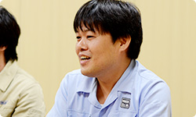 岩田 なるほど。開発中に水木さんから 「湯澤さんがいてくれてよかった・・・」 という話はけっこう何度も聞いていたんですけど、 今日、その意味が、すとんと落ちました。 栗栖 そこはかなり信頼していました。 逆に我々のことも信頼してくれていて、 最初に相談してからつくる、 というよりも、とりあえず先に つくってから進められたのはよかったです。 岩田 ご縁は不思議なものですね。 昔はライバルとして サービスをつくっていたのに・・・。 湯澤・栗栖 （顔を見合わせて）本当です（笑）。 栗栖 あと、開発環境に チャットルームをつくったんですけど、 そこで発言すると、すぐに誰かが反応してくれて、 まるで席がその辺にある人のような感覚で、 ほとんど距離感を感じることなく 仕事を進められました。 元山 それに、週に何度も会議をしていたから、 意見を正直に言えたこともあります。 だんだん会っているうちに 「仲間」みたいな感じになってきて、 まるで、任天堂のみなさんが、 はてなの社員みたいな感じでした（笑）。 栗栖 え？ そっちですか？ 僕らが任天堂さんの社員じゃなくて？ 元山 はい。わりと任天堂さんに 来ていただくことが多かったので。 はてなの中で、普通にオフィスの席の後ろで 作業しているときもありましたから（笑）。 岩田 身内になれたのは、 しょっちゅう会ったからだけですかね？ それだけじゃないような気がしますけど。 栗栖 あ、あと、「クラゲさん」って呼べたのも、 よかったんじゃないですかね？（笑） 元山 あー、そうですね。 ニックネームで呼び合えたことも よかったのかもしれないです。 栗栖 はてな社内は、 基本的にはてなＩＤで呼び合っていて、 元山さんのＩＤが「kudakurage」なんで、 いつも「クラゲさん」って呼んでいるんですけど、 そういうところでも親近感が・・・ 湧きました？（笑） 加藤 はい。どっちが本名か、 わからなくなりましたから。 元山 そんなわけないでしょう！ 一同 （笑） 湯澤 あと、煮詰まったときはすぐ、 「合宿しましょう」という感じにもなりました。 まあ、合宿といっても、 １日どこかに缶詰めになって 「集中的に」ってことなんですけど、 そういったことがすぐにできたので スムーズに進められたと思います。 栗栖 最初、“クリマ（クリエイターマンション）”って 愛称で呼ばれている、はてなが契約している マンションの一室で開発していたんですけど、 任天堂のみなさんに気に入っていただけて、 「ここに来ると楽しいです」 とおっしゃっていただけました。 湯澤 １ＬＤＫのマンションに、 大人が１０人ぐらい集まってね（笑）。 加藤 その後、オフィスに移動して 本格開発をスタートするのですが、 オフィスでは 土足厳禁じゃないんですけど、 みなさん、靴を脱がれるんです。 「僕らも脱いだほうがいいですか？」って聞いたら、 「いや、脱がなくていいです」と言われて・・・。 栗栖 あの、なぜ靴を脱ぐのか、というと、 初期の開発陣が、ずっとクリエイターマンションで 裸足で開発をしていたので、足が自由じゃないと、 うまく自分をモチベートできない感じに なってしまっているんです（笑）。 脱ぎたい人が脱いでいるだけだから、 土足で大丈夫なんです。 加藤 でも・・・どっちかっていうと、 僕らも脱ぎたいくらいなんですけど（笑）。 栗栖 あ、そうでしたか（笑）。 岩田 ああ、たしかにわたしもマンションで 作業をしていたハル研（※22）時代、 靴を脱がないとプログラムできない体に なっていたような気がします（笑）。 でも、ものをつくることに集中できて、 朝から晩までそれがやれるんだから、 楽しくてしかたがないんですよね。 今度、のぞきにいこうかな・・・。 栗栖 はい、ぜひ、お越しください！（笑） ※22 ハル研＝株式会社ハル研究所。『星のカービィ』や『スマブラ』シリーズなどを手掛けてきたソフトメーカー。かつて岩田が社長をつとめていた。
Wii U GamePad 篇 Miiverse プロデュース 篇 Miiverse 開発スタッフ 篇 インターネットブラウザー 篇 Wii U Chat 篇 New スーパーマリオブラザーズ U 篇 ZombiU（ゾンビU） 篇 Nintendo×JOYSOUND Wii カラオケ U 篇 Nintendo Land 篇 Nintendo TVii 篇 Wii Street U powered by Google 篇 1. “ゲーム機ならではのブラウザー” 2. 「Miiがいるだけで」 3. “共感” 4. “クラウド型ゲーム日記” 岩田 元山さん、ＰＣやタブレットとゲーム機とでは、 デザイン上で違いを感じたところはありますか？ 元山 シチュエーションが明らかに違うと思うんです。 ＰＣだったら、机で操作することになるし、 スマートフォンなら出先で使うことが あるかもしれないですけど、 『Miiverse』はゲームをしながら コミュニケーションをしますので、 いままでとはだいぶ違う印象がありました。 栗栖 たしかに最初、 「置いてゲームをするのか」 「片手で持つのか」 という話は、かなりしていましたね。 あと、わたしが水木さんからのご提案で 「ここにボタンをつけよう」と元山に言うと、 「それ、本当にいるんですか？」って だいたい言われました。 「いつ、誰が使うんですか？」って（笑）。 元山 はい、すみません（笑）。 いつも「どういう状態でこれを使うのか」って、 実際のシチュエーションを想像するようにしているんです。 「本当に使うのか？」をシミュレートしてみて、 「いや、いらない」と思ったときは、 正直にお伝えするようにしていました。 あと、僕なりに「なぜボタンなのか？」を できるだけ解釈して、ボタンの必要性を 考え直していました。 岩田 ある程度動き出してから、 新しい発見はありましたか？ 元山 デバッグで使ってもらえる段階になると、 考えていた以上のことがやりとりされて、 本当にいろんな反応があったので、 楽しさを実感できました。 岩田 ようやく、もうすぐ、本当に動きますね。 加藤 はい。デバッグのとき、 仮想的に『マリオ』のコミュニティをつくって 発言が並ぶのを見たんですけど、 ものすごくイメージがふくらんで、 「実際に遊ぶとこんな感じなのか・・・」 って思い描けました。 栗栖 「ステージがクリアできません！」という投稿があって、 「ルイージを踏んでいくんです」と回答があって、 「できましたー！」みたいなやりとりを見て、 「あー、これか！」と思いました。 湯澤 『Miiverse』は我々が想像している以上の使われかたを、 サービスが開始されてから お客さんにしていただけるんじゃないかと ものすごく楽しみなんです。 岩田 かつてのウェブサービスもみんな、 そうなっていったわけで、 たくさんの人が集まって 創造する知恵ってすごいですからね。 栗栖 そうですね。『うごメモ』も 最初は作品に対する「すごいですね」のような 評価コメントが多かったのに、 だんだん雑談チャットみたいなコメントが増えてきて、 そのうち『うごメモ』作品そのものが 「みんなでチャットしましょう」みたいな投稿が増えてきて、 こういう予想もしない変化が本当に面白いんですよね。 岩田 実際、「密度濃く、スピーディーに進んだ」 と思うんですが、うまくここまで進んだ理由って、 何だと思いますか？ 栗栖 じつは、湯澤さんは前職で、 「Yahoo!知恵袋」（※20）という Ｑ＆Ａサイトを担当されていて、 わたしもじつはこの仕事の前に、 「人力検索はてな」（※21）という Ｑ＆Ａサイトをやっていて、 同じ業界で同じ領域のサービスを担当していたんです。 ※20 「Yahoo!知恵袋」＝Yahoo! JAPANが運営する、みんなの知恵共有サービス。 ※21 「人力検索はてな」＝株式会社はてなが運営する、疑問を解決するＱ＆Ａサイト。 岩田 まさにライバルじゃないですか（笑）。 栗栖 はい（笑）。 最初の顔合わせのとき、 「なんと奇遇な！」みたいに盛り上がったんです。 だから基本的にウェブサービスという部分では、 共通認識がはじめからありました。 岩田 おたがい、一定の信頼が できるところからはじまったわけで、 いわば最初から“共感”のある状態から スタートできたんですね。 湯澤 ええ。だから、たとえば 水木さんから仕様の相談がきても、普通なら 「はてなさんに確認します」っていうところを、 「おそらくはてなさんならここまでは確実にできます」って、 わたしのほうで判断して、お返事していました。 岩田 はてなさんの代わりに、 返事をしていたんですか（笑）。 湯澤 はい。はてなさんにあとから確認すると、 そのあたりの感覚は一致していました。 長くウェブ開発に携わってきた者同士、 何が実現困難で何が簡単なのかの感覚は 一致していたと思います。 そこも今回、非常にスピーディーに 物事が進んだひとつの要因だと思います。 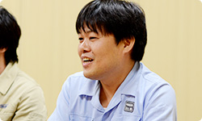 岩田 なるほど。開発中に水木さんから 「湯澤さんがいてくれてよかった・・・」 という話はけっこう何度も聞いていたんですけど、 今日、その意味が、すとんと落ちました。 栗栖 そこはかなり信頼していました。 逆に我々のことも信頼してくれていて、 最初に相談してからつくる、 というよりも、とりあえず先に つくってから進められたのはよかったです。 岩田 ご縁は不思議なものですね。 昔はライバルとして サービスをつくっていたのに・・・。 湯澤・栗栖 （顔を見合わせて）本当です（笑）。 栗栖 あと、開発環境に チャットルームをつくったんですけど、 そこで発言すると、すぐに誰かが反応してくれて、 まるで席がその辺にある人のような感覚で、 ほとんど距離感を感じることなく 仕事を進められました。 元山 それに、週に何度も会議をしていたから、 意見を正直に言えたこともあります。 だんだん会っているうちに 「仲間」みたいな感じになってきて、 まるで、任天堂のみなさんが、 はてなの社員みたいな感じでした（笑）。 栗栖 え？ そっちですか？ 僕らが任天堂さんの社員じゃなくて？ 元山 はい。わりと任天堂さんに 来ていただくことが多かったので。 はてなの中で、普通にオフィスの席の後ろで 作業しているときもありましたから（笑）。 岩田 身内になれたのは、 しょっちゅう会ったからだけですかね？ それだけじゃないような気がしますけど。 栗栖 あ、あと、「クラゲさん」って呼べたのも、 よかったんじゃないですかね？（笑） 元山 あー、そうですね。 ニックネームで呼び合えたことも よかったのかもしれないです。 栗栖 はてな社内は、 基本的にはてなＩＤで呼び合っていて、 元山さんのＩＤが「kudakurage」なんで、 いつも「クラゲさん」って呼んでいるんですけど、 そういうところでも親近感が・・・ 湧きました？（笑） 加藤 はい。どっちが本名か、 わからなくなりましたから。 元山 そんなわけないでしょう！ 一同 （笑） 湯澤 あと、煮詰まったときはすぐ、 「合宿しましょう」という感じにもなりました。 まあ、合宿といっても、 １日どこかに缶詰めになって 「集中的に」ってことなんですけど、 そういったことがすぐにできたので スムーズに進められたと思います。 栗栖 最初、“クリマ（クリエイターマンション）”って 愛称で呼ばれている、はてなが契約している マンションの一室で開発していたんですけど、 任天堂のみなさんに気に入っていただけて、 「ここに来ると楽しいです」 とおっしゃっていただけました。 湯澤 １ＬＤＫのマンションに、 大人が１０人ぐらい集まってね（笑）。 加藤 その後、オフィスに移動して 本格開発をスタートするのですが、 オフィスでは 土足厳禁じゃないんですけど、 みなさん、靴を脱がれるんです。 「僕らも脱いだほうがいいですか？」って聞いたら、 「いや、脱がなくていいです」と言われて・・・。 栗栖 あの、なぜ靴を脱ぐのか、というと、 初期の開発陣が、ずっとクリエイターマンションで 裸足で開発をしていたので、足が自由じゃないと、 うまく自分をモチベートできない感じに なってしまっているんです（笑）。 脱ぎたい人が脱いでいるだけだから、 土足で大丈夫なんです。 加藤 でも・・・どっちかっていうと、 僕らも脱ぎたいくらいなんですけど（笑）。 栗栖 あ、そうでしたか（笑）。 岩田 ああ、たしかにわたしもマンションで 作業をしていたハル研（※22）時代、 靴を脱がないとプログラムできない体に なっていたような気がします（笑）。 でも、ものをつくることに集中できて、 朝から晩までそれがやれるんだから、 楽しくてしかたがないんですよね。 今度、のぞきにいこうかな・・・。 栗栖 はい、ぜひ、お越しください！（笑） ※22 ハル研＝株式会社ハル研究所。『星のカービィ』や『スマブラ』シリーズなどを手掛けてきたソフトメーカー。かつて岩田が社長をつとめていた。
Miiverse プロデュース 篇 Miiverse 開発スタッフ 篇 インターネットブラウザー 篇 Wii U Chat 篇 New スーパーマリオブラザーズ U 篇 ZombiU（ゾンビU） 篇 Nintendo×JOYSOUND Wii カラオケ U 篇 Nintendo Land 篇 Nintendo TVii 篇 Wii Street U powered by Google 篇 1. “ゲーム機ならではのブラウザー” 2. 「Miiがいるだけで」 3. “共感” 4. “クラウド型ゲーム日記” 岩田 元山さん、ＰＣやタブレットとゲーム機とでは、 デザイン上で違いを感じたところはありますか？ 元山 シチュエーションが明らかに違うと思うんです。 ＰＣだったら、机で操作することになるし、 スマートフォンなら出先で使うことが あるかもしれないですけど、 『Miiverse』はゲームをしながら コミュニケーションをしますので、 いままでとはだいぶ違う印象がありました。 栗栖 たしかに最初、 「置いてゲームをするのか」 「片手で持つのか」 という話は、かなりしていましたね。 あと、わたしが水木さんからのご提案で 「ここにボタンをつけよう」と元山に言うと、 「それ、本当にいるんですか？」って だいたい言われました。 「いつ、誰が使うんですか？」って（笑）。 元山 はい、すみません（笑）。 いつも「どういう状態でこれを使うのか」って、 実際のシチュエーションを想像するようにしているんです。 「本当に使うのか？」をシミュレートしてみて、 「いや、いらない」と思ったときは、 正直にお伝えするようにしていました。 あと、僕なりに「なぜボタンなのか？」を できるだけ解釈して、ボタンの必要性を 考え直していました。 岩田 ある程度動き出してから、 新しい発見はありましたか？ 元山 デバッグで使ってもらえる段階になると、 考えていた以上のことがやりとりされて、 本当にいろんな反応があったので、 楽しさを実感できました。 岩田 ようやく、もうすぐ、本当に動きますね。 加藤 はい。デバッグのとき、 仮想的に『マリオ』のコミュニティをつくって 発言が並ぶのを見たんですけど、 ものすごくイメージがふくらんで、 「実際に遊ぶとこんな感じなのか・・・」 って思い描けました。 栗栖 「ステージがクリアできません！」という投稿があって、 「ルイージを踏んでいくんです」と回答があって、 「できましたー！」みたいなやりとりを見て、 「あー、これか！」と思いました。 湯澤 『Miiverse』は我々が想像している以上の使われかたを、 サービスが開始されてから お客さんにしていただけるんじゃないかと ものすごく楽しみなんです。 岩田 かつてのウェブサービスもみんな、 そうなっていったわけで、 たくさんの人が集まって 創造する知恵ってすごいですからね。 栗栖 そうですね。『うごメモ』も 最初は作品に対する「すごいですね」のような 評価コメントが多かったのに、 だんだん雑談チャットみたいなコメントが増えてきて、 そのうち『うごメモ』作品そのものが 「みんなでチャットしましょう」みたいな投稿が増えてきて、 こういう予想もしない変化が本当に面白いんですよね。 岩田 実際、「密度濃く、スピーディーに進んだ」 と思うんですが、うまくここまで進んだ理由って、 何だと思いますか？ 栗栖 じつは、湯澤さんは前職で、 「Yahoo!知恵袋」（※20）という Ｑ＆Ａサイトを担当されていて、 わたしもじつはこの仕事の前に、 「人力検索はてな」（※21）という Ｑ＆Ａサイトをやっていて、 同じ業界で同じ領域のサービスを担当していたんです。 ※20 「Yahoo!知恵袋」＝Yahoo! JAPANが運営する、みんなの知恵共有サービス。 ※21 「人力検索はてな」＝株式会社はてなが運営する、疑問を解決するＱ＆Ａサイト。 岩田 まさにライバルじゃないですか（笑）。 栗栖 はい（笑）。 最初の顔合わせのとき、 「なんと奇遇な！」みたいに盛り上がったんです。 だから基本的にウェブサービスという部分では、 共通認識がはじめからありました。 岩田 おたがい、一定の信頼が できるところからはじまったわけで、 いわば最初から“共感”のある状態から スタートできたんですね。 湯澤 ええ。だから、たとえば 水木さんから仕様の相談がきても、普通なら 「はてなさんに確認します」っていうところを、 「おそらくはてなさんならここまでは確実にできます」って、 わたしのほうで判断して、お返事していました。 岩田 はてなさんの代わりに、 返事をしていたんですか（笑）。 湯澤 はい。はてなさんにあとから確認すると、 そのあたりの感覚は一致していました。 長くウェブ開発に携わってきた者同士、 何が実現困難で何が簡単なのかの感覚は 一致していたと思います。 そこも今回、非常にスピーディーに 物事が進んだひとつの要因だと思います。 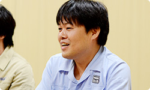 岩田 なるほど。開発中に水木さんから 「湯澤さんがいてくれてよかった・・・」 という話はけっこう何度も聞いていたんですけど、 今日、その意味が、すとんと落ちました。 栗栖 そこはかなり信頼していました。 逆に我々のことも信頼してくれていて、 最初に相談してからつくる、 というよりも、とりあえず先に つくってから進められたのはよかったです。 岩田 ご縁は不思議なものですね。 昔はライバルとして サービスをつくっていたのに・・・。 湯澤・栗栖 （顔を見合わせて）本当です（笑）。 栗栖 あと、開発環境に チャットルームをつくったんですけど、 そこで発言すると、すぐに誰かが反応してくれて、 まるで席がその辺にある人のような感覚で、 ほとんど距離感を感じることなく 仕事を進められました。 元山 それに、週に何度も会議をしていたから、 意見を正直に言えたこともあります。 だんだん会っているうちに 「仲間」みたいな感じになってきて、 まるで、任天堂のみなさんが、 はてなの社員みたいな感じでした（笑）。 栗栖 え？ そっちですか？ 僕らが任天堂さんの社員じゃなくて？ 元山 はい。わりと任天堂さんに 来ていただくことが多かったので。 はてなの中で、普通にオフィスの席の後ろで 作業しているときもありましたから（笑）。 岩田 身内になれたのは、 しょっちゅう会ったからだけですかね？ それだけじゃないような気がしますけど。 栗栖 あ、あと、「クラゲさん」って呼べたのも、 よかったんじゃないですかね？（笑） 元山 あー、そうですね。 ニックネームで呼び合えたことも よかったのかもしれないです。 栗栖 はてな社内は、 基本的にはてなＩＤで呼び合っていて、 元山さんのＩＤが「kudakurage」なんで、 いつも「クラゲさん」って呼んでいるんですけど、 そういうところでも親近感が・・・ 湧きました？（笑） 加藤 はい。どっちが本名か、 わからなくなりましたから。 元山 そんなわけないでしょう！ 一同 （笑） 湯澤 あと、煮詰まったときはすぐ、 「合宿しましょう」という感じにもなりました。 まあ、合宿といっても、 １日どこかに缶詰めになって 「集中的に」ってことなんですけど、 そういったことがすぐにできたので スムーズに進められたと思います。 栗栖 最初、“クリマ（クリエイターマンション）”って 愛称で呼ばれている、はてなが契約している マンションの一室で開発していたんですけど、 任天堂のみなさんに気に入っていただけて、 「ここに来ると楽しいです」 とおっしゃっていただけました。 湯澤 １ＬＤＫのマンションに、 大人が１０人ぐらい集まってね（笑）。 加藤 その後、オフィスに移動して 本格開発をスタートするのですが、 オフィスでは 土足厳禁じゃないんですけど、 みなさん、靴を脱がれるんです。 「僕らも脱いだほうがいいですか？」って聞いたら、 「いや、脱がなくていいです」と言われて・・・。 栗栖 あの、なぜ靴を脱ぐのか、というと、 初期の開発陣が、ずっとクリエイターマンションで 裸足で開発をしていたので、足が自由じゃないと、 うまく自分をモチベートできない感じに なってしまっているんです（笑）。 脱ぎたい人が脱いでいるだけだから、 土足で大丈夫なんです。 加藤 でも・・・どっちかっていうと、 僕らも脱ぎたいくらいなんですけど（笑）。 栗栖 あ、そうでしたか（笑）。 岩田 ああ、たしかにわたしもマンションで 作業をしていたハル研（※22）時代、 靴を脱がないとプログラムできない体に なっていたような気がします（笑）。 でも、ものをつくることに集中できて、 朝から晩までそれがやれるんだから、 楽しくてしかたがないんですよね。 今度、のぞきにいこうかな・・・。 栗栖 はい、ぜひ、お越しください！（笑） ※22 ハル研＝株式会社ハル研究所。『星のカービィ』や『スマブラ』シリーズなどを手掛けてきたソフトメーカー。かつて岩田が社長をつとめていた。
Miiverse 開発スタッフ 篇 インターネットブラウザー 篇 Wii U Chat 篇 New スーパーマリオブラザーズ U 篇 ZombiU（ゾンビU） 篇 Nintendo×JOYSOUND Wii カラオケ U 篇 Nintendo Land 篇 Nintendo TVii 篇 Wii Street U powered by Google 篇 1. “ゲーム機ならではのブラウザー” 2. 「Miiがいるだけで」 3. “共感” 4. “クラウド型ゲーム日記” 岩田 元山さん、ＰＣやタブレットとゲーム機とでは、 デザイン上で違いを感じたところはありますか？ 元山 シチュエーションが明らかに違うと思うんです。 ＰＣだったら、机で操作することになるし、 スマートフォンなら出先で使うことが あるかもしれないですけど、 『Miiverse』はゲームをしながら コミュニケーションをしますので、 いままでとはだいぶ違う印象がありました。 栗栖 たしかに最初、 「置いてゲームをするのか」 「片手で持つのか」 という話は、かなりしていましたね。 あと、わたしが水木さんからのご提案で 「ここにボタンをつけよう」と元山に言うと、 「それ、本当にいるんですか？」って だいたい言われました。 「いつ、誰が使うんですか？」って（笑）。 元山 はい、すみません（笑）。 いつも「どういう状態でこれを使うのか」って、 実際のシチュエーションを想像するようにしているんです。 「本当に使うのか？」をシミュレートしてみて、 「いや、いらない」と思ったときは、 正直にお伝えするようにしていました。 あと、僕なりに「なぜボタンなのか？」を できるだけ解釈して、ボタンの必要性を 考え直していました。 岩田 ある程度動き出してから、 新しい発見はありましたか？ 元山 デバッグで使ってもらえる段階になると、 考えていた以上のことがやりとりされて、 本当にいろんな反応があったので、 楽しさを実感できました。 岩田 ようやく、もうすぐ、本当に動きますね。 加藤 はい。デバッグのとき、 仮想的に『マリオ』のコミュニティをつくって 発言が並ぶのを見たんですけど、 ものすごくイメージがふくらんで、 「実際に遊ぶとこんな感じなのか・・・」 って思い描けました。 栗栖 「ステージがクリアできません！」という投稿があって、 「ルイージを踏んでいくんです」と回答があって、 「できましたー！」みたいなやりとりを見て、 「あー、これか！」と思いました。 湯澤 『Miiverse』は我々が想像している以上の使われかたを、 サービスが開始されてから お客さんにしていただけるんじゃないかと ものすごく楽しみなんです。 岩田 かつてのウェブサービスもみんな、 そうなっていったわけで、 たくさんの人が集まって 創造する知恵ってすごいですからね。 栗栖 そうですね。『うごメモ』も 最初は作品に対する「すごいですね」のような 評価コメントが多かったのに、 だんだん雑談チャットみたいなコメントが増えてきて、 そのうち『うごメモ』作品そのものが 「みんなでチャットしましょう」みたいな投稿が増えてきて、 こういう予想もしない変化が本当に面白いんですよね。 岩田 実際、「密度濃く、スピーディーに進んだ」 と思うんですが、うまくここまで進んだ理由って、 何だと思いますか？ 栗栖 じつは、湯澤さんは前職で、 「Yahoo!知恵袋」（※20）という Ｑ＆Ａサイトを担当されていて、 わたしもじつはこの仕事の前に、 「人力検索はてな」（※21）という Ｑ＆Ａサイトをやっていて、 同じ業界で同じ領域のサービスを担当していたんです。 ※20 「Yahoo!知恵袋」＝Yahoo! JAPANが運営する、みんなの知恵共有サービス。 ※21 「人力検索はてな」＝株式会社はてなが運営する、疑問を解決するＱ＆Ａサイト。 岩田 まさにライバルじゃないですか（笑）。 栗栖 はい（笑）。 最初の顔合わせのとき、 「なんと奇遇な！」みたいに盛り上がったんです。 だから基本的にウェブサービスという部分では、 共通認識がはじめからありました。 岩田 おたがい、一定の信頼が できるところからはじまったわけで、 いわば最初から“共感”のある状態から スタートできたんですね。 湯澤 ええ。だから、たとえば 水木さんから仕様の相談がきても、普通なら 「はてなさんに確認します」っていうところを、 「おそらくはてなさんならここまでは確実にできます」って、 わたしのほうで判断して、お返事していました。 岩田 はてなさんの代わりに、 返事をしていたんですか（笑）。 湯澤 はい。はてなさんにあとから確認すると、 そのあたりの感覚は一致していました。 長くウェブ開発に携わってきた者同士、 何が実現困難で何が簡単なのかの感覚は 一致していたと思います。 そこも今回、非常にスピーディーに 物事が進んだひとつの要因だと思います。 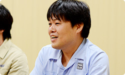 岩田 なるほど。開発中に水木さんから 「湯澤さんがいてくれてよかった・・・」 という話はけっこう何度も聞いていたんですけど、 今日、その意味が、すとんと落ちました。 栗栖 そこはかなり信頼していました。 逆に我々のことも信頼してくれていて、 最初に相談してからつくる、 というよりも、とりあえず先に つくってから進められたのはよかったです。 岩田 ご縁は不思議なものですね。 昔はライバルとして サービスをつくっていたのに・・・。 湯澤・栗栖 （顔を見合わせて）本当です（笑）。 栗栖 あと、開発環境に チャットルームをつくったんですけど、 そこで発言すると、すぐに誰かが反応してくれて、 まるで席がその辺にある人のような感覚で、 ほとんど距離感を感じることなく 仕事を進められました。 元山 それに、週に何度も会議をしていたから、 意見を正直に言えたこともあります。 だんだん会っているうちに 「仲間」みたいな感じになってきて、 まるで、任天堂のみなさんが、 はてなの社員みたいな感じでした（笑）。 栗栖 え？ そっちですか？ 僕らが任天堂さんの社員じゃなくて？ 元山 はい。わりと任天堂さんに 来ていただくことが多かったので。 はてなの中で、普通にオフィスの席の後ろで 作業しているときもありましたから（笑）。 岩田 身内になれたのは、 しょっちゅう会ったからだけですかね？ それだけじゃないような気がしますけど。 栗栖 あ、あと、「クラゲさん」って呼べたのも、 よかったんじゃないですかね？（笑） 元山 あー、そうですね。 ニックネームで呼び合えたことも よかったのかもしれないです。 栗栖 はてな社内は、 基本的にはてなＩＤで呼び合っていて、 元山さんのＩＤが「kudakurage」なんで、 いつも「クラゲさん」って呼んでいるんですけど、 そういうところでも親近感が・・・ 湧きました？（笑） 加藤 はい。どっちが本名か、 わからなくなりましたから。 元山 そんなわけないでしょう！ 一同 （笑） 湯澤 あと、煮詰まったときはすぐ、 「合宿しましょう」という感じにもなりました。 まあ、合宿といっても、 １日どこかに缶詰めになって 「集中的に」ってことなんですけど、 そういったことがすぐにできたので スムーズに進められたと思います。 栗栖 最初、“クリマ（クリエイターマンション）”って 愛称で呼ばれている、はてなが契約している マンションの一室で開発していたんですけど、 任天堂のみなさんに気に入っていただけて、 「ここに来ると楽しいです」 とおっしゃっていただけました。 湯澤 １ＬＤＫのマンションに、 大人が１０人ぐらい集まってね（笑）。 加藤 その後、オフィスに移動して 本格開発をスタートするのですが、 オフィスでは 土足厳禁じゃないんですけど、 みなさん、靴を脱がれるんです。 「僕らも脱いだほうがいいですか？」って聞いたら、 「いや、脱がなくていいです」と言われて・・・。 栗栖 あの、なぜ靴を脱ぐのか、というと、 初期の開発陣が、ずっとクリエイターマンションで 裸足で開発をしていたので、足が自由じゃないと、 うまく自分をモチベートできない感じに なってしまっているんです（笑）。 脱ぎたい人が脱いでいるだけだから、 土足で大丈夫なんです。 加藤 でも・・・どっちかっていうと、 僕らも脱ぎたいくらいなんですけど（笑）。 栗栖 あ、そうでしたか（笑）。 岩田 ああ、たしかにわたしもマンションで 作業をしていたハル研（※22）時代、 靴を脱がないとプログラムできない体に なっていたような気がします（笑）。 でも、ものをつくることに集中できて、 朝から晩までそれがやれるんだから、 楽しくてしかたがないんですよね。 今度、のぞきにいこうかな・・・。 栗栖 はい、ぜひ、お越しください！（笑） ※22 ハル研＝株式会社ハル研究所。『星のカービィ』や『スマブラ』シリーズなどを手掛けてきたソフトメーカー。かつて岩田が社長をつとめていた。
インターネットブラウザー 篇 Wii U Chat 篇 New スーパーマリオブラザーズ U 篇 ZombiU（ゾンビU） 篇 Nintendo×JOYSOUND Wii カラオケ U 篇 Nintendo Land 篇 Nintendo TVii 篇 Wii Street U powered by Google 篇 1. “ゲーム機ならではのブラウザー” 2. 「Miiがいるだけで」 3. “共感” 4. “クラウド型ゲーム日記” 岩田 元山さん、ＰＣやタブレットとゲーム機とでは、 デザイン上で違いを感じたところはありますか？ 元山 シチュエーションが明らかに違うと思うんです。 ＰＣだったら、机で操作することになるし、 スマートフォンなら出先で使うことが あるかもしれないですけど、 『Miiverse』はゲームをしながら コミュニケーションをしますので、 いままでとはだいぶ違う印象がありました。 栗栖 たしかに最初、 「置いてゲームをするのか」 「片手で持つのか」 という話は、かなりしていましたね。 あと、わたしが水木さんからのご提案で 「ここにボタンをつけよう」と元山に言うと、 「それ、本当にいるんですか？」って だいたい言われました。 「いつ、誰が使うんですか？」って（笑）。 元山 はい、すみません（笑）。 いつも「どういう状態でこれを使うのか」って、 実際のシチュエーションを想像するようにしているんです。 「本当に使うのか？」をシミュレートしてみて、 「いや、いらない」と思ったときは、 正直にお伝えするようにしていました。 あと、僕なりに「なぜボタンなのか？」を できるだけ解釈して、ボタンの必要性を 考え直していました。 岩田 ある程度動き出してから、 新しい発見はありましたか？ 元山 デバッグで使ってもらえる段階になると、 考えていた以上のことがやりとりされて、 本当にいろんな反応があったので、 楽しさを実感できました。 岩田 ようやく、もうすぐ、本当に動きますね。 加藤 はい。デバッグのとき、 仮想的に『マリオ』のコミュニティをつくって 発言が並ぶのを見たんですけど、 ものすごくイメージがふくらんで、 「実際に遊ぶとこんな感じなのか・・・」 って思い描けました。 栗栖 「ステージがクリアできません！」という投稿があって、 「ルイージを踏んでいくんです」と回答があって、 「できましたー！」みたいなやりとりを見て、 「あー、これか！」と思いました。 湯澤 『Miiverse』は我々が想像している以上の使われかたを、 サービスが開始されてから お客さんにしていただけるんじゃないかと ものすごく楽しみなんです。 岩田 かつてのウェブサービスもみんな、 そうなっていったわけで、 たくさんの人が集まって 創造する知恵ってすごいですからね。 栗栖 そうですね。『うごメモ』も 最初は作品に対する「すごいですね」のような 評価コメントが多かったのに、 だんだん雑談チャットみたいなコメントが増えてきて、 そのうち『うごメモ』作品そのものが 「みんなでチャットしましょう」みたいな投稿が増えてきて、 こういう予想もしない変化が本当に面白いんですよね。 岩田 実際、「密度濃く、スピーディーに進んだ」 と思うんですが、うまくここまで進んだ理由って、 何だと思いますか？ 栗栖 じつは、湯澤さんは前職で、 「Yahoo!知恵袋」（※20）という Ｑ＆Ａサイトを担当されていて、 わたしもじつはこの仕事の前に、 「人力検索はてな」（※21）という Ｑ＆Ａサイトをやっていて、 同じ業界で同じ領域のサービスを担当していたんです。 ※20 「Yahoo!知恵袋」＝Yahoo! JAPANが運営する、みんなの知恵共有サービス。 ※21 「人力検索はてな」＝株式会社はてなが運営する、疑問を解決するＱ＆Ａサイト。 岩田 まさにライバルじゃないですか（笑）。 栗栖 はい（笑）。 最初の顔合わせのとき、 「なんと奇遇な！」みたいに盛り上がったんです。 だから基本的にウェブサービスという部分では、 共通認識がはじめからありました。 岩田 おたがい、一定の信頼が できるところからはじまったわけで、 いわば最初から“共感”のある状態から スタートできたんですね。 湯澤 ええ。だから、たとえば 水木さんから仕様の相談がきても、普通なら 「はてなさんに確認します」っていうところを、 「おそらくはてなさんならここまでは確実にできます」って、 わたしのほうで判断して、お返事していました。 岩田 はてなさんの代わりに、 返事をしていたんですか（笑）。 湯澤 はい。はてなさんにあとから確認すると、 そのあたりの感覚は一致していました。 長くウェブ開発に携わってきた者同士、 何が実現困難で何が簡単なのかの感覚は 一致していたと思います。 そこも今回、非常にスピーディーに 物事が進んだひとつの要因だと思います。 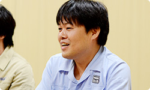 岩田 なるほど。開発中に水木さんから 「湯澤さんがいてくれてよかった・・・」 という話はけっこう何度も聞いていたんですけど、 今日、その意味が、すとんと落ちました。 栗栖 そこはかなり信頼していました。 逆に我々のことも信頼してくれていて、 最初に相談してからつくる、 というよりも、とりあえず先に つくってから進められたのはよかったです。 岩田 ご縁は不思議なものですね。 昔はライバルとして サービスをつくっていたのに・・・。 湯澤・栗栖 （顔を見合わせて）本当です（笑）。 栗栖 あと、開発環境に チャットルームをつくったんですけど、 そこで発言すると、すぐに誰かが反応してくれて、 まるで席がその辺にある人のような感覚で、 ほとんど距離感を感じることなく 仕事を進められました。 元山 それに、週に何度も会議をしていたから、 意見を正直に言えたこともあります。 だんだん会っているうちに 「仲間」みたいな感じになってきて、 まるで、任天堂のみなさんが、 はてなの社員みたいな感じでした（笑）。 栗栖 え？ そっちですか？ 僕らが任天堂さんの社員じゃなくて？ 元山 はい。わりと任天堂さんに 来ていただくことが多かったので。 はてなの中で、普通にオフィスの席の後ろで 作業しているときもありましたから（笑）。 岩田 身内になれたのは、 しょっちゅう会ったからだけですかね？ それだけじゃないような気がしますけど。 栗栖 あ、あと、「クラゲさん」って呼べたのも、 よかったんじゃないですかね？（笑） 元山 あー、そうですね。 ニックネームで呼び合えたことも よかったのかもしれないです。 栗栖 はてな社内は、 基本的にはてなＩＤで呼び合っていて、 元山さんのＩＤが「kudakurage」なんで、 いつも「クラゲさん」って呼んでいるんですけど、 そういうところでも親近感が・・・ 湧きました？（笑） 加藤 はい。どっちが本名か、 わからなくなりましたから。 元山 そんなわけないでしょう！ 一同 （笑） 湯澤 あと、煮詰まったときはすぐ、 「合宿しましょう」という感じにもなりました。 まあ、合宿といっても、 １日どこかに缶詰めになって 「集中的に」ってことなんですけど、 そういったことがすぐにできたので スムーズに進められたと思います。 栗栖 最初、“クリマ（クリエイターマンション）”って 愛称で呼ばれている、はてなが契約している マンションの一室で開発していたんですけど、 任天堂のみなさんに気に入っていただけて、 「ここに来ると楽しいです」 とおっしゃっていただけました。 湯澤 １ＬＤＫのマンションに、 大人が１０人ぐらい集まってね（笑）。 加藤 その後、オフィスに移動して 本格開発をスタートするのですが、 オフィスでは 土足厳禁じゃないんですけど、 みなさん、靴を脱がれるんです。 「僕らも脱いだほうがいいですか？」って聞いたら、 「いや、脱がなくていいです」と言われて・・・。 栗栖 あの、なぜ靴を脱ぐのか、というと、 初期の開発陣が、ずっとクリエイターマンションで 裸足で開発をしていたので、足が自由じゃないと、 うまく自分をモチベートできない感じに なってしまっているんです（笑）。 脱ぎたい人が脱いでいるだけだから、 土足で大丈夫なんです。 加藤 でも・・・どっちかっていうと、 僕らも脱ぎたいくらいなんですけど（笑）。 栗栖 あ、そうでしたか（笑）。 岩田 ああ、たしかにわたしもマンションで 作業をしていたハル研（※22）時代、 靴を脱がないとプログラムできない体に なっていたような気がします（笑）。 でも、ものをつくることに集中できて、 朝から晩までそれがやれるんだから、 楽しくてしかたがないんですよね。 今度、のぞきにいこうかな・・・。 栗栖 はい、ぜひ、お越しください！（笑） ※22 ハル研＝株式会社ハル研究所。『星のカービィ』や『スマブラ』シリーズなどを手掛けてきたソフトメーカー。かつて岩田が社長をつとめていた。
Wii U Chat 篇 New スーパーマリオブラザーズ U 篇 ZombiU（ゾンビU） 篇 Nintendo×JOYSOUND Wii カラオケ U 篇 Nintendo Land 篇 Nintendo TVii 篇 Wii Street U powered by Google 篇 1. “ゲーム機ならではのブラウザー” 2. 「Miiがいるだけで」 3. “共感” 4. “クラウド型ゲーム日記” 岩田 元山さん、ＰＣやタブレットとゲーム機とでは、 デザイン上で違いを感じたところはありますか？ 元山 シチュエーションが明らかに違うと思うんです。 ＰＣだったら、机で操作することになるし、 スマートフォンなら出先で使うことが あるかもしれないですけど、 『Miiverse』はゲームをしながら コミュニケーションをしますので、 いままでとはだいぶ違う印象がありました。 栗栖 たしかに最初、 「置いてゲームをするのか」 「片手で持つのか」 という話は、かなりしていましたね。 あと、わたしが水木さんからのご提案で 「ここにボタンをつけよう」と元山に言うと、 「それ、本当にいるんですか？」って だいたい言われました。 「いつ、誰が使うんですか？」って（笑）。 元山 はい、すみません（笑）。 いつも「どういう状態でこれを使うのか」って、 実際のシチュエーションを想像するようにしているんです。 「本当に使うのか？」をシミュレートしてみて、 「いや、いらない」と思ったときは、 正直にお伝えするようにしていました。 あと、僕なりに「なぜボタンなのか？」を できるだけ解釈して、ボタンの必要性を 考え直していました。 岩田 ある程度動き出してから、 新しい発見はありましたか？ 元山 デバッグで使ってもらえる段階になると、 考えていた以上のことがやりとりされて、 本当にいろんな反応があったので、 楽しさを実感できました。 岩田 ようやく、もうすぐ、本当に動きますね。 加藤 はい。デバッグのとき、 仮想的に『マリオ』のコミュニティをつくって 発言が並ぶのを見たんですけど、 ものすごくイメージがふくらんで、 「実際に遊ぶとこんな感じなのか・・・」 って思い描けました。 栗栖 「ステージがクリアできません！」という投稿があって、 「ルイージを踏んでいくんです」と回答があって、 「できましたー！」みたいなやりとりを見て、 「あー、これか！」と思いました。 湯澤 『Miiverse』は我々が想像している以上の使われかたを、 サービスが開始されてから お客さんにしていただけるんじゃないかと ものすごく楽しみなんです。 岩田 かつてのウェブサービスもみんな、 そうなっていったわけで、 たくさんの人が集まって 創造する知恵ってすごいですからね。 栗栖 そうですね。『うごメモ』も 最初は作品に対する「すごいですね」のような 評価コメントが多かったのに、 だんだん雑談チャットみたいなコメントが増えてきて、 そのうち『うごメモ』作品そのものが 「みんなでチャットしましょう」みたいな投稿が増えてきて、 こういう予想もしない変化が本当に面白いんですよね。 岩田 実際、「密度濃く、スピーディーに進んだ」 と思うんですが、うまくここまで進んだ理由って、 何だと思いますか？ 栗栖 じつは、湯澤さんは前職で、 「Yahoo!知恵袋」（※20）という Ｑ＆Ａサイトを担当されていて、 わたしもじつはこの仕事の前に、 「人力検索はてな」（※21）という Ｑ＆Ａサイトをやっていて、 同じ業界で同じ領域のサービスを担当していたんです。 ※20 「Yahoo!知恵袋」＝Yahoo! JAPANが運営する、みんなの知恵共有サービス。 ※21 「人力検索はてな」＝株式会社はてなが運営する、疑問を解決するＱ＆Ａサイト。 岩田 まさにライバルじゃないですか（笑）。 栗栖 はい（笑）。 最初の顔合わせのとき、 「なんと奇遇な！」みたいに盛り上がったんです。 だから基本的にウェブサービスという部分では、 共通認識がはじめからありました。 岩田 おたがい、一定の信頼が できるところからはじまったわけで、 いわば最初から“共感”のある状態から スタートできたんですね。 湯澤 ええ。だから、たとえば 水木さんから仕様の相談がきても、普通なら 「はてなさんに確認します」っていうところを、 「おそらくはてなさんならここまでは確実にできます」って、 わたしのほうで判断して、お返事していました。 岩田 はてなさんの代わりに、 返事をしていたんですか（笑）。 湯澤 はい。はてなさんにあとから確認すると、 そのあたりの感覚は一致していました。 長くウェブ開発に携わってきた者同士、 何が実現困難で何が簡単なのかの感覚は 一致していたと思います。 そこも今回、非常にスピーディーに 物事が進んだひとつの要因だと思います。 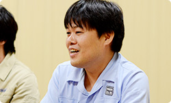 岩田 なるほど。開発中に水木さんから 「湯澤さんがいてくれてよかった・・・」 という話はけっこう何度も聞いていたんですけど、 今日、その意味が、すとんと落ちました。 栗栖 そこはかなり信頼していました。 逆に我々のことも信頼してくれていて、 最初に相談してからつくる、 というよりも、とりあえず先に つくってから進められたのはよかったです。 岩田 ご縁は不思議なものですね。 昔はライバルとして サービスをつくっていたのに・・・。 湯澤・栗栖 （顔を見合わせて）本当です（笑）。 栗栖 あと、開発環境に チャットルームをつくったんですけど、 そこで発言すると、すぐに誰かが反応してくれて、 まるで席がその辺にある人のような感覚で、 ほとんど距離感を感じることなく 仕事を進められました。 元山 それに、週に何度も会議をしていたから、 意見を正直に言えたこともあります。 だんだん会っているうちに 「仲間」みたいな感じになってきて、 まるで、任天堂のみなさんが、 はてなの社員みたいな感じでした（笑）。 栗栖 え？ そっちですか？ 僕らが任天堂さんの社員じゃなくて？ 元山 はい。わりと任天堂さんに 来ていただくことが多かったので。 はてなの中で、普通にオフィスの席の後ろで 作業しているときもありましたから（笑）。 岩田 身内になれたのは、 しょっちゅう会ったからだけですかね？ それだけじゃないような気がしますけど。 栗栖 あ、あと、「クラゲさん」って呼べたのも、 よかったんじゃないですかね？（笑） 元山 あー、そうですね。 ニックネームで呼び合えたことも よかったのかもしれないです。 栗栖 はてな社内は、 基本的にはてなＩＤで呼び合っていて、 元山さんのＩＤが「kudakurage」なんで、 いつも「クラゲさん」って呼んでいるんですけど、 そういうところでも親近感が・・・ 湧きました？（笑） 加藤 はい。どっちが本名か、 わからなくなりましたから。 元山 そんなわけないでしょう！ 一同 （笑） 湯澤 あと、煮詰まったときはすぐ、 「合宿しましょう」という感じにもなりました。 まあ、合宿といっても、 １日どこかに缶詰めになって 「集中的に」ってことなんですけど、 そういったことがすぐにできたので スムーズに進められたと思います。 栗栖 最初、“クリマ（クリエイターマンション）”って 愛称で呼ばれている、はてなが契約している マンションの一室で開発していたんですけど、 任天堂のみなさんに気に入っていただけて、 「ここに来ると楽しいです」 とおっしゃっていただけました。 湯澤 １ＬＤＫのマンションに、 大人が１０人ぐらい集まってね（笑）。 加藤 その後、オフィスに移動して 本格開発をスタートするのですが、 オフィスでは 土足厳禁じゃないんですけど、 みなさん、靴を脱がれるんです。 「僕らも脱いだほうがいいですか？」って聞いたら、 「いや、脱がなくていいです」と言われて・・・。 栗栖 あの、なぜ靴を脱ぐのか、というと、 初期の開発陣が、ずっとクリエイターマンションで 裸足で開発をしていたので、足が自由じゃないと、 うまく自分をモチベートできない感じに なってしまっているんです（笑）。 脱ぎたい人が脱いでいるだけだから、 土足で大丈夫なんです。 加藤 でも・・・どっちかっていうと、 僕らも脱ぎたいくらいなんですけど（笑）。 栗栖 あ、そうでしたか（笑）。 岩田 ああ、たしかにわたしもマンションで 作業をしていたハル研（※22）時代、 靴を脱がないとプログラムできない体に なっていたような気がします（笑）。 でも、ものをつくることに集中できて、 朝から晩までそれがやれるんだから、 楽しくてしかたがないんですよね。 今度、のぞきにいこうかな・・・。 栗栖 はい、ぜひ、お越しください！（笑） ※22 ハル研＝株式会社ハル研究所。『星のカービィ』や『スマブラ』シリーズなどを手掛けてきたソフトメーカー。かつて岩田が社長をつとめていた。
New スーパーマリオブラザーズ U 篇 ZombiU（ゾンビU） 篇 Nintendo×JOYSOUND Wii カラオケ U 篇 Nintendo Land 篇 Nintendo TVii 篇 Wii Street U powered by Google 篇 1. “ゲーム機ならではのブラウザー” 2. 「Miiがいるだけで」 3. “共感” 4. “クラウド型ゲーム日記” 岩田 元山さん、ＰＣやタブレットとゲーム機とでは、 デザイン上で違いを感じたところはありますか？ 元山 シチュエーションが明らかに違うと思うんです。 ＰＣだったら、机で操作することになるし、 スマートフォンなら出先で使うことが あるかもしれないですけど、 『Miiverse』はゲームをしながら コミュニケーションをしますので、 いままでとはだいぶ違う印象がありました。 栗栖 たしかに最初、 「置いてゲームをするのか」 「片手で持つのか」 という話は、かなりしていましたね。 あと、わたしが水木さんからのご提案で 「ここにボタンをつけよう」と元山に言うと、 「それ、本当にいるんですか？」って だいたい言われました。 「いつ、誰が使うんですか？」って（笑）。 元山 はい、すみません（笑）。 いつも「どういう状態でこれを使うのか」って、 実際のシチュエーションを想像するようにしているんです。 「本当に使うのか？」をシミュレートしてみて、 「いや、いらない」と思ったときは、 正直にお伝えするようにしていました。 あと、僕なりに「なぜボタンなのか？」を できるだけ解釈して、ボタンの必要性を 考え直していました。 岩田 ある程度動き出してから、 新しい発見はありましたか？ 元山 デバッグで使ってもらえる段階になると、 考えていた以上のことがやりとりされて、 本当にいろんな反応があったので、 楽しさを実感できました。 岩田 ようやく、もうすぐ、本当に動きますね。 加藤 はい。デバッグのとき、 仮想的に『マリオ』のコミュニティをつくって 発言が並ぶのを見たんですけど、 ものすごくイメージがふくらんで、 「実際に遊ぶとこんな感じなのか・・・」 って思い描けました。 栗栖 「ステージがクリアできません！」という投稿があって、 「ルイージを踏んでいくんです」と回答があって、 「できましたー！」みたいなやりとりを見て、 「あー、これか！」と思いました。 湯澤 『Miiverse』は我々が想像している以上の使われかたを、 サービスが開始されてから お客さんにしていただけるんじゃないかと ものすごく楽しみなんです。 岩田 かつてのウェブサービスもみんな、 そうなっていったわけで、 たくさんの人が集まって 創造する知恵ってすごいですからね。 栗栖 そうですね。『うごメモ』も 最初は作品に対する「すごいですね」のような 評価コメントが多かったのに、 だんだん雑談チャットみたいなコメントが増えてきて、 そのうち『うごメモ』作品そのものが 「みんなでチャットしましょう」みたいな投稿が増えてきて、 こういう予想もしない変化が本当に面白いんですよね。 岩田 実際、「密度濃く、スピーディーに進んだ」 と思うんですが、うまくここまで進んだ理由って、 何だと思いますか？ 栗栖 じつは、湯澤さんは前職で、 「Yahoo!知恵袋」（※20）という Ｑ＆Ａサイトを担当されていて、 わたしもじつはこの仕事の前に、 「人力検索はてな」（※21）という Ｑ＆Ａサイトをやっていて、 同じ業界で同じ領域のサービスを担当していたんです。 ※20 「Yahoo!知恵袋」＝Yahoo! JAPANが運営する、みんなの知恵共有サービス。 ※21 「人力検索はてな」＝株式会社はてなが運営する、疑問を解決するＱ＆Ａサイト。 岩田 まさにライバルじゃないですか（笑）。 栗栖 はい（笑）。 最初の顔合わせのとき、 「なんと奇遇な！」みたいに盛り上がったんです。 だから基本的にウェブサービスという部分では、 共通認識がはじめからありました。 岩田 おたがい、一定の信頼が できるところからはじまったわけで、 いわば最初から“共感”のある状態から スタートできたんですね。 湯澤 ええ。だから、たとえば 水木さんから仕様の相談がきても、普通なら 「はてなさんに確認します」っていうところを、 「おそらくはてなさんならここまでは確実にできます」って、 わたしのほうで判断して、お返事していました。 岩田 はてなさんの代わりに、 返事をしていたんですか（笑）。 湯澤 はい。はてなさんにあとから確認すると、 そのあたりの感覚は一致していました。 長くウェブ開発に携わってきた者同士、 何が実現困難で何が簡単なのかの感覚は 一致していたと思います。 そこも今回、非常にスピーディーに 物事が進んだひとつの要因だと思います。 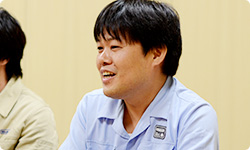 岩田 なるほど。開発中に水木さんから 「湯澤さんがいてくれてよかった・・・」 という話はけっこう何度も聞いていたんですけど、 今日、その意味が、すとんと落ちました。 栗栖 そこはかなり信頼していました。 逆に我々のことも信頼してくれていて、 最初に相談してからつくる、 というよりも、とりあえず先に つくってから進められたのはよかったです。 岩田 ご縁は不思議なものですね。 昔はライバルとして サービスをつくっていたのに・・・。 湯澤・栗栖 （顔を見合わせて）本当です（笑）。 栗栖 あと、開発環境に チャットルームをつくったんですけど、 そこで発言すると、すぐに誰かが反応してくれて、 まるで席がその辺にある人のような感覚で、 ほとんど距離感を感じることなく 仕事を進められました。 元山 それに、週に何度も会議をしていたから、 意見を正直に言えたこともあります。 だんだん会っているうちに 「仲間」みたいな感じになってきて、 まるで、任天堂のみなさんが、 はてなの社員みたいな感じでした（笑）。 栗栖 え？ そっちですか？ 僕らが任天堂さんの社員じゃなくて？ 元山 はい。わりと任天堂さんに 来ていただくことが多かったので。 はてなの中で、普通にオフィスの席の後ろで 作業しているときもありましたから（笑）。 岩田 身内になれたのは、 しょっちゅう会ったからだけですかね？ それだけじゃないような気がしますけど。 栗栖 あ、あと、「クラゲさん」って呼べたのも、 よかったんじゃないですかね？（笑） 元山 あー、そうですね。 ニックネームで呼び合えたことも よかったのかもしれないです。 栗栖 はてな社内は、 基本的にはてなＩＤで呼び合っていて、 元山さんのＩＤが「kudakurage」なんで、 いつも「クラゲさん」って呼んでいるんですけど、 そういうところでも親近感が・・・ 湧きました？（笑） 加藤 はい。どっちが本名か、 わからなくなりましたから。 元山 そんなわけないでしょう！ 一同 （笑） 湯澤 あと、煮詰まったときはすぐ、 「合宿しましょう」という感じにもなりました。 まあ、合宿といっても、 １日どこかに缶詰めになって 「集中的に」ってことなんですけど、 そういったことがすぐにできたので スムーズに進められたと思います。 栗栖 最初、“クリマ（クリエイターマンション）”って 愛称で呼ばれている、はてなが契約している マンションの一室で開発していたんですけど、 任天堂のみなさんに気に入っていただけて、 「ここに来ると楽しいです」 とおっしゃっていただけました。 湯澤 １ＬＤＫのマンションに、 大人が１０人ぐらい集まってね（笑）。 加藤 その後、オフィスに移動して 本格開発をスタートするのですが、 オフィスでは 土足厳禁じゃないんですけど、 みなさん、靴を脱がれるんです。 「僕らも脱いだほうがいいですか？」って聞いたら、 「いや、脱がなくていいです」と言われて・・・。 栗栖 あの、なぜ靴を脱ぐのか、というと、 初期の開発陣が、ずっとクリエイターマンションで 裸足で開発をしていたので、足が自由じゃないと、 うまく自分をモチベートできない感じに なってしまっているんです（笑）。 脱ぎたい人が脱いでいるだけだから、 土足で大丈夫なんです。 加藤 でも・・・どっちかっていうと、 僕らも脱ぎたいくらいなんですけど（笑）。 栗栖 あ、そうでしたか（笑）。 岩田 ああ、たしかにわたしもマンションで 作業をしていたハル研（※22）時代、 靴を脱がないとプログラムできない体に なっていたような気がします（笑）。 でも、ものをつくることに集中できて、 朝から晩までそれがやれるんだから、 楽しくてしかたがないんですよね。 今度、のぞきにいこうかな・・・。 栗栖 はい、ぜひ、お越しください！（笑） ※22 ハル研＝株式会社ハル研究所。『星のカービィ』や『スマブラ』シリーズなどを手掛けてきたソフトメーカー。かつて岩田が社長をつとめていた。
ZombiU（ゾンビU） 篇 Nintendo×JOYSOUND Wii カラオケ U 篇 Nintendo Land 篇 Nintendo TVii 篇 Wii Street U powered by Google 篇 1. “ゲーム機ならではのブラウザー” 2. 「Miiがいるだけで」 3. “共感” 4. “クラウド型ゲーム日記” 岩田 元山さん、ＰＣやタブレットとゲーム機とでは、 デザイン上で違いを感じたところはありますか？ 元山 シチュエーションが明らかに違うと思うんです。 ＰＣだったら、机で操作することになるし、 スマートフォンなら出先で使うことが あるかもしれないですけど、 『Miiverse』はゲームをしながら コミュニケーションをしますので、 いままでとはだいぶ違う印象がありました。 栗栖 たしかに最初、 「置いてゲームをするのか」 「片手で持つのか」 という話は、かなりしていましたね。 あと、わたしが水木さんからのご提案で 「ここにボタンをつけよう」と元山に言うと、 「それ、本当にいるんですか？」って だいたい言われました。 「いつ、誰が使うんですか？」って（笑）。 元山 はい、すみません（笑）。 いつも「どういう状態でこれを使うのか」って、 実際のシチュエーションを想像するようにしているんです。 「本当に使うのか？」をシミュレートしてみて、 「いや、いらない」と思ったときは、 正直にお伝えするようにしていました。 あと、僕なりに「なぜボタンなのか？」を できるだけ解釈して、ボタンの必要性を 考え直していました。 岩田 ある程度動き出してから、 新しい発見はありましたか？ 元山 デバッグで使ってもらえる段階になると、 考えていた以上のことがやりとりされて、 本当にいろんな反応があったので、 楽しさを実感できました。 岩田 ようやく、もうすぐ、本当に動きますね。 加藤 はい。デバッグのとき、 仮想的に『マリオ』のコミュニティをつくって 発言が並ぶのを見たんですけど、 ものすごくイメージがふくらんで、 「実際に遊ぶとこんな感じなのか・・・」 って思い描けました。 栗栖 「ステージがクリアできません！」という投稿があって、 「ルイージを踏んでいくんです」と回答があって、 「できましたー！」みたいなやりとりを見て、 「あー、これか！」と思いました。 湯澤 『Miiverse』は我々が想像している以上の使われかたを、 サービスが開始されてから お客さんにしていただけるんじゃないかと ものすごく楽しみなんです。 岩田 かつてのウェブサービスもみんな、 そうなっていったわけで、 たくさんの人が集まって 創造する知恵ってすごいですからね。 栗栖 そうですね。『うごメモ』も 最初は作品に対する「すごいですね」のような 評価コメントが多かったのに、 だんだん雑談チャットみたいなコメントが増えてきて、 そのうち『うごメモ』作品そのものが 「みんなでチャットしましょう」みたいな投稿が増えてきて、 こういう予想もしない変化が本当に面白いんですよね。 岩田 実際、「密度濃く、スピーディーに進んだ」 と思うんですが、うまくここまで進んだ理由って、 何だと思いますか？ 栗栖 じつは、湯澤さんは前職で、 「Yahoo!知恵袋」（※20）という Ｑ＆Ａサイトを担当されていて、 わたしもじつはこの仕事の前に、 「人力検索はてな」（※21）という Ｑ＆Ａサイトをやっていて、 同じ業界で同じ領域のサービスを担当していたんです。 ※20 「Yahoo!知恵袋」＝Yahoo! JAPANが運営する、みんなの知恵共有サービス。 ※21 「人力検索はてな」＝株式会社はてなが運営する、疑問を解決するＱ＆Ａサイト。 岩田 まさにライバルじゃないですか（笑）。 栗栖 はい（笑）。 最初の顔合わせのとき、 「なんと奇遇な！」みたいに盛り上がったんです。 だから基本的にウェブサービスという部分では、 共通認識がはじめからありました。 岩田 おたがい、一定の信頼が できるところからはじまったわけで、 いわば最初から“共感”のある状態から スタートできたんですね。 湯澤 ええ。だから、たとえば 水木さんから仕様の相談がきても、普通なら 「はてなさんに確認します」っていうところを、 「おそらくはてなさんならここまでは確実にできます」って、 わたしのほうで判断して、お返事していました。 岩田 はてなさんの代わりに、 返事をしていたんですか（笑）。 湯澤 はい。はてなさんにあとから確認すると、 そのあたりの感覚は一致していました。 長くウェブ開発に携わってきた者同士、 何が実現困難で何が簡単なのかの感覚は 一致していたと思います。 そこも今回、非常にスピーディーに 物事が進んだひとつの要因だと思います。 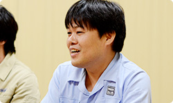 岩田 なるほど。開発中に水木さんから 「湯澤さんがいてくれてよかった・・・」 という話はけっこう何度も聞いていたんですけど、 今日、その意味が、すとんと落ちました。 栗栖 そこはかなり信頼していました。 逆に我々のことも信頼してくれていて、 最初に相談してからつくる、 というよりも、とりあえず先に つくってから進められたのはよかったです。 岩田 ご縁は不思議なものですね。 昔はライバルとして サービスをつくっていたのに・・・。 湯澤・栗栖 （顔を見合わせて）本当です（笑）。 栗栖 あと、開発環境に チャットルームをつくったんですけど、 そこで発言すると、すぐに誰かが反応してくれて、 まるで席がその辺にある人のような感覚で、 ほとんど距離感を感じることなく 仕事を進められました。 元山 それに、週に何度も会議をしていたから、 意見を正直に言えたこともあります。 だんだん会っているうちに 「仲間」みたいな感じになってきて、 まるで、任天堂のみなさんが、 はてなの社員みたいな感じでした（笑）。 栗栖 え？ そっちですか？ 僕らが任天堂さんの社員じゃなくて？ 元山 はい。わりと任天堂さんに 来ていただくことが多かったので。 はてなの中で、普通にオフィスの席の後ろで 作業しているときもありましたから（笑）。 岩田 身内になれたのは、 しょっちゅう会ったからだけですかね？ それだけじゃないような気がしますけど。 栗栖 あ、あと、「クラゲさん」って呼べたのも、 よかったんじゃないですかね？（笑） 元山 あー、そうですね。 ニックネームで呼び合えたことも よかったのかもしれないです。 栗栖 はてな社内は、 基本的にはてなＩＤで呼び合っていて、 元山さんのＩＤが「kudakurage」なんで、 いつも「クラゲさん」って呼んでいるんですけど、 そういうところでも親近感が・・・ 湧きました？（笑） 加藤 はい。どっちが本名か、 わからなくなりましたから。 元山 そんなわけないでしょう！ 一同 （笑） 湯澤 あと、煮詰まったときはすぐ、 「合宿しましょう」という感じにもなりました。 まあ、合宿といっても、 １日どこかに缶詰めになって 「集中的に」ってことなんですけど、 そういったことがすぐにできたので スムーズに進められたと思います。 栗栖 最初、“クリマ（クリエイターマンション）”って 愛称で呼ばれている、はてなが契約している マンションの一室で開発していたんですけど、 任天堂のみなさんに気に入っていただけて、 「ここに来ると楽しいです」 とおっしゃっていただけました。 湯澤 １ＬＤＫのマンションに、 大人が１０人ぐらい集まってね（笑）。 加藤 その後、オフィスに移動して 本格開発をスタートするのですが、 オフィスでは 土足厳禁じゃないんですけど、 みなさん、靴を脱がれるんです。 「僕らも脱いだほうがいいですか？」って聞いたら、 「いや、脱がなくていいです」と言われて・・・。 栗栖 あの、なぜ靴を脱ぐのか、というと、 初期の開発陣が、ずっとクリエイターマンションで 裸足で開発をしていたので、足が自由じゃないと、 うまく自分をモチベートできない感じに なってしまっているんです（笑）。 脱ぎたい人が脱いでいるだけだから、 土足で大丈夫なんです。 加藤 でも・・・どっちかっていうと、 僕らも脱ぎたいくらいなんですけど（笑）。 栗栖 あ、そうでしたか（笑）。 岩田 ああ、たしかにわたしもマンションで 作業をしていたハル研（※22）時代、 靴を脱がないとプログラムできない体に なっていたような気がします（笑）。 でも、ものをつくることに集中できて、 朝から晩までそれがやれるんだから、 楽しくてしかたがないんですよね。 今度、のぞきにいこうかな・・・。 栗栖 はい、ぜひ、お越しください！（笑） ※22 ハル研＝株式会社ハル研究所。『星のカービィ』や『スマブラ』シリーズなどを手掛けてきたソフトメーカー。かつて岩田が社長をつとめていた。
Nintendo×JOYSOUND Wii カラオケ U 篇 Nintendo Land 篇 Nintendo TVii 篇 Wii Street U powered by Google 篇 1. “ゲーム機ならではのブラウザー” 2. 「Miiがいるだけで」 3. “共感” 4. “クラウド型ゲーム日記” 岩田 元山さん、ＰＣやタブレットとゲーム機とでは、 デザイン上で違いを感じたところはありますか？ 元山 シチュエーションが明らかに違うと思うんです。 ＰＣだったら、机で操作することになるし、 スマートフォンなら出先で使うことが あるかもしれないですけど、 『Miiverse』はゲームをしながら コミュニケーションをしますので、 いままでとはだいぶ違う印象がありました。 栗栖 たしかに最初、 「置いてゲームをするのか」 「片手で持つのか」 という話は、かなりしていましたね。 あと、わたしが水木さんからのご提案で 「ここにボタンをつけよう」と元山に言うと、 「それ、本当にいるんですか？」って だいたい言われました。 「いつ、誰が使うんですか？」って（笑）。 元山 はい、すみません（笑）。 いつも「どういう状態でこれを使うのか」って、 実際のシチュエーションを想像するようにしているんです。 「本当に使うのか？」をシミュレートしてみて、 「いや、いらない」と思ったときは、 正直にお伝えするようにしていました。 あと、僕なりに「なぜボタンなのか？」を できるだけ解釈して、ボタンの必要性を 考え直していました。 岩田 ある程度動き出してから、 新しい発見はありましたか？ 元山 デバッグで使ってもらえる段階になると、 考えていた以上のことがやりとりされて、 本当にいろんな反応があったので、 楽しさを実感できました。 岩田 ようやく、もうすぐ、本当に動きますね。 加藤 はい。デバッグのとき、 仮想的に『マリオ』のコミュニティをつくって 発言が並ぶのを見たんですけど、 ものすごくイメージがふくらんで、 「実際に遊ぶとこんな感じなのか・・・」 って思い描けました。 栗栖 「ステージがクリアできません！」という投稿があって、 「ルイージを踏んでいくんです」と回答があって、 「できましたー！」みたいなやりとりを見て、 「あー、これか！」と思いました。 湯澤 『Miiverse』は我々が想像している以上の使われかたを、 サービスが開始されてから お客さんにしていただけるんじゃないかと ものすごく楽しみなんです。 岩田 かつてのウェブサービスもみんな、 そうなっていったわけで、 たくさんの人が集まって 創造する知恵ってすごいですからね。 栗栖 そうですね。『うごメモ』も 最初は作品に対する「すごいですね」のような 評価コメントが多かったのに、 だんだん雑談チャットみたいなコメントが増えてきて、 そのうち『うごメモ』作品そのものが 「みんなでチャットしましょう」みたいな投稿が増えてきて、 こういう予想もしない変化が本当に面白いんですよね。 岩田 実際、「密度濃く、スピーディーに進んだ」 と思うんですが、うまくここまで進んだ理由って、 何だと思いますか？ 栗栖 じつは、湯澤さんは前職で、 「Yahoo!知恵袋」（※20）という Ｑ＆Ａサイトを担当されていて、 わたしもじつはこの仕事の前に、 「人力検索はてな」（※21）という Ｑ＆Ａサイトをやっていて、 同じ業界で同じ領域のサービスを担当していたんです。 ※20 「Yahoo!知恵袋」＝Yahoo! JAPANが運営する、みんなの知恵共有サービス。 ※21 「人力検索はてな」＝株式会社はてなが運営する、疑問を解決するＱ＆Ａサイト。 岩田 まさにライバルじゃないですか（笑）。 栗栖 はい（笑）。 最初の顔合わせのとき、 「なんと奇遇な！」みたいに盛り上がったんです。 だから基本的にウェブサービスという部分では、 共通認識がはじめからありました。 岩田 おたがい、一定の信頼が できるところからはじまったわけで、 いわば最初から“共感”のある状態から スタートできたんですね。 湯澤 ええ。だから、たとえば 水木さんから仕様の相談がきても、普通なら 「はてなさんに確認します」っていうところを、 「おそらくはてなさんならここまでは確実にできます」って、 わたしのほうで判断して、お返事していました。 岩田 はてなさんの代わりに、 返事をしていたんですか（笑）。 湯澤 はい。はてなさんにあとから確認すると、 そのあたりの感覚は一致していました。 長くウェブ開発に携わってきた者同士、 何が実現困難で何が簡単なのかの感覚は 一致していたと思います。 そこも今回、非常にスピーディーに 物事が進んだひとつの要因だと思います。 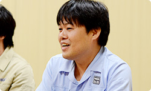 岩田 なるほど。開発中に水木さんから 「湯澤さんがいてくれてよかった・・・」 という話はけっこう何度も聞いていたんですけど、 今日、その意味が、すとんと落ちました。 栗栖 そこはかなり信頼していました。 逆に我々のことも信頼してくれていて、 最初に相談してからつくる、 というよりも、とりあえず先に つくってから進められたのはよかったです。 岩田 ご縁は不思議なものですね。 昔はライバルとして サービスをつくっていたのに・・・。 湯澤・栗栖 （顔を見合わせて）本当です（笑）。 栗栖 あと、開発環境に チャットルームをつくったんですけど、 そこで発言すると、すぐに誰かが反応してくれて、 まるで席がその辺にある人のような感覚で、 ほとんど距離感を感じることなく 仕事を進められました。 元山 それに、週に何度も会議をしていたから、 意見を正直に言えたこともあります。 だんだん会っているうちに 「仲間」みたいな感じになってきて、 まるで、任天堂のみなさんが、 はてなの社員みたいな感じでした（笑）。 栗栖 え？ そっちですか？ 僕らが任天堂さんの社員じゃなくて？ 元山 はい。わりと任天堂さんに 来ていただくことが多かったので。 はてなの中で、普通にオフィスの席の後ろで 作業しているときもありましたから（笑）。 岩田 身内になれたのは、 しょっちゅう会ったからだけですかね？ それだけじゃないような気がしますけど。 栗栖 あ、あと、「クラゲさん」って呼べたのも、 よかったんじゃないですかね？（笑） 元山 あー、そうですね。 ニックネームで呼び合えたことも よかったのかもしれないです。 栗栖 はてな社内は、 基本的にはてなＩＤで呼び合っていて、 元山さんのＩＤが「kudakurage」なんで、 いつも「クラゲさん」って呼んでいるんですけど、 そういうところでも親近感が・・・ 湧きました？（笑） 加藤 はい。どっちが本名か、 わからなくなりましたから。 元山 そんなわけないでしょう！ 一同 （笑） 湯澤 あと、煮詰まったときはすぐ、 「合宿しましょう」という感じにもなりました。 まあ、合宿といっても、 １日どこかに缶詰めになって 「集中的に」ってことなんですけど、 そういったことがすぐにできたので スムーズに進められたと思います。 栗栖 最初、“クリマ（クリエイターマンション）”って 愛称で呼ばれている、はてなが契約している マンションの一室で開発していたんですけど、 任天堂のみなさんに気に入っていただけて、 「ここに来ると楽しいです」 とおっしゃっていただけました。 湯澤 １ＬＤＫのマンションに、 大人が１０人ぐらい集まってね（笑）。 加藤 その後、オフィスに移動して 本格開発をスタートするのですが、 オフィスでは 土足厳禁じゃないんですけど、 みなさん、靴を脱がれるんです。 「僕らも脱いだほうがいいですか？」って聞いたら、 「いや、脱がなくていいです」と言われて・・・。 栗栖 あの、なぜ靴を脱ぐのか、というと、 初期の開発陣が、ずっとクリエイターマンションで 裸足で開発をしていたので、足が自由じゃないと、 うまく自分をモチベートできない感じに なってしまっているんです（笑）。 脱ぎたい人が脱いでいるだけだから、 土足で大丈夫なんです。 加藤 でも・・・どっちかっていうと、 僕らも脱ぎたいくらいなんですけど（笑）。 栗栖 あ、そうでしたか（笑）。 岩田 ああ、たしかにわたしもマンションで 作業をしていたハル研（※22）時代、 靴を脱がないとプログラムできない体に なっていたような気がします（笑）。 でも、ものをつくることに集中できて、 朝から晩までそれがやれるんだから、 楽しくてしかたがないんですよね。 今度、のぞきにいこうかな・・・。 栗栖 はい、ぜひ、お越しください！（笑） ※22 ハル研＝株式会社ハル研究所。『星のカービィ』や『スマブラ』シリーズなどを手掛けてきたソフトメーカー。かつて岩田が社長をつとめていた。
Nintendo Land 篇 Nintendo TVii 篇 Wii Street U powered by Google 篇 1. “ゲーム機ならではのブラウザー” 2. 「Miiがいるだけで」 3. “共感” 4. “クラウド型ゲーム日記” 岩田 元山さん、ＰＣやタブレットとゲーム機とでは、 デザイン上で違いを感じたところはありますか？ 元山 シチュエーションが明らかに違うと思うんです。 ＰＣだったら、机で操作することになるし、 スマートフォンなら出先で使うことが あるかもしれないですけど、 『Miiverse』はゲームをしながら コミュニケーションをしますので、 いままでとはだいぶ違う印象がありました。 栗栖 たしかに最初、 「置いてゲームをするのか」 「片手で持つのか」 という話は、かなりしていましたね。 あと、わたしが水木さんからのご提案で 「ここにボタンをつけよう」と元山に言うと、 「それ、本当にいるんですか？」って だいたい言われました。 「いつ、誰が使うんですか？」って（笑）。 元山 はい、すみません（笑）。 いつも「どういう状態でこれを使うのか」って、 実際のシチュエーションを想像するようにしているんです。 「本当に使うのか？」をシミュレートしてみて、 「いや、いらない」と思ったときは、 正直にお伝えするようにしていました。 あと、僕なりに「なぜボタンなのか？」を できるだけ解釈して、ボタンの必要性を 考え直していました。 岩田 ある程度動き出してから、 新しい発見はありましたか？ 元山 デバッグで使ってもらえる段階になると、 考えていた以上のことがやりとりされて、 本当にいろんな反応があったので、 楽しさを実感できました。 岩田 ようやく、もうすぐ、本当に動きますね。 加藤 はい。デバッグのとき、 仮想的に『マリオ』のコミュニティをつくって 発言が並ぶのを見たんですけど、 ものすごくイメージがふくらんで、 「実際に遊ぶとこんな感じなのか・・・」 って思い描けました。 栗栖 「ステージがクリアできません！」という投稿があって、 「ルイージを踏んでいくんです」と回答があって、 「できましたー！」みたいなやりとりを見て、 「あー、これか！」と思いました。 湯澤 『Miiverse』は我々が想像している以上の使われかたを、 サービスが開始されてから お客さんにしていただけるんじゃないかと ものすごく楽しみなんです。 岩田 かつてのウェブサービスもみんな、 そうなっていったわけで、 たくさんの人が集まって 創造する知恵ってすごいですからね。 栗栖 そうですね。『うごメモ』も 最初は作品に対する「すごいですね」のような 評価コメントが多かったのに、 だんだん雑談チャットみたいなコメントが増えてきて、 そのうち『うごメモ』作品そのものが 「みんなでチャットしましょう」みたいな投稿が増えてきて、 こういう予想もしない変化が本当に面白いんですよね。 岩田 実際、「密度濃く、スピーディーに進んだ」 と思うんですが、うまくここまで進んだ理由って、 何だと思いますか？ 栗栖 じつは、湯澤さんは前職で、 「Yahoo!知恵袋」（※20）という Ｑ＆Ａサイトを担当されていて、 わたしもじつはこの仕事の前に、 「人力検索はてな」（※21）という Ｑ＆Ａサイトをやっていて、 同じ業界で同じ領域のサービスを担当していたんです。 ※20 「Yahoo!知恵袋」＝Yahoo! JAPANが運営する、みんなの知恵共有サービス。 ※21 「人力検索はてな」＝株式会社はてなが運営する、疑問を解決するＱ＆Ａサイト。 岩田 まさにライバルじゃないですか（笑）。 栗栖 はい（笑）。 最初の顔合わせのとき、 「なんと奇遇な！」みたいに盛り上がったんです。 だから基本的にウェブサービスという部分では、 共通認識がはじめからありました。 岩田 おたがい、一定の信頼が できるところからはじまったわけで、 いわば最初から“共感”のある状態から スタートできたんですね。 湯澤 ええ。だから、たとえば 水木さんから仕様の相談がきても、普通なら 「はてなさんに確認します」っていうところを、 「おそらくはてなさんならここまでは確実にできます」って、 わたしのほうで判断して、お返事していました。 岩田 はてなさんの代わりに、 返事をしていたんですか（笑）。 湯澤 はい。はてなさんにあとから確認すると、 そのあたりの感覚は一致していました。 長くウェブ開発に携わってきた者同士、 何が実現困難で何が簡単なのかの感覚は 一致していたと思います。 そこも今回、非常にスピーディーに 物事が進んだひとつの要因だと思います。 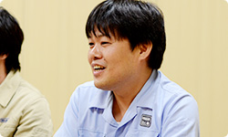 岩田 なるほど。開発中に水木さんから 「湯澤さんがいてくれてよかった・・・」 という話はけっこう何度も聞いていたんですけど、 今日、その意味が、すとんと落ちました。 栗栖 そこはかなり信頼していました。 逆に我々のことも信頼してくれていて、 最初に相談してからつくる、 というよりも、とりあえず先に つくってから進められたのはよかったです。 岩田 ご縁は不思議なものですね。 昔はライバルとして サービスをつくっていたのに・・・。 湯澤・栗栖 （顔を見合わせて）本当です（笑）。 栗栖 あと、開発環境に チャットルームをつくったんですけど、 そこで発言すると、すぐに誰かが反応してくれて、 まるで席がその辺にある人のような感覚で、 ほとんど距離感を感じることなく 仕事を進められました。 元山 それに、週に何度も会議をしていたから、 意見を正直に言えたこともあります。 だんだん会っているうちに 「仲間」みたいな感じになってきて、 まるで、任天堂のみなさんが、 はてなの社員みたいな感じでした（笑）。 栗栖 え？ そっちですか？ 僕らが任天堂さんの社員じゃなくて？ 元山 はい。わりと任天堂さんに 来ていただくことが多かったので。 はてなの中で、普通にオフィスの席の後ろで 作業しているときもありましたから（笑）。 岩田 身内になれたのは、 しょっちゅう会ったからだけですかね？ それだけじゃないような気がしますけど。 栗栖 あ、あと、「クラゲさん」って呼べたのも、 よかったんじゃないですかね？（笑） 元山 あー、そうですね。 ニックネームで呼び合えたことも よかったのかもしれないです。 栗栖 はてな社内は、 基本的にはてなＩＤで呼び合っていて、 元山さんのＩＤが「kudakurage」なんで、 いつも「クラゲさん」って呼んでいるんですけど、 そういうところでも親近感が・・・ 湧きました？（笑） 加藤 はい。どっちが本名か、 わからなくなりましたから。 元山 そんなわけないでしょう！ 一同 （笑） 湯澤 あと、煮詰まったときはすぐ、 「合宿しましょう」という感じにもなりました。 まあ、合宿といっても、 １日どこかに缶詰めになって 「集中的に」ってことなんですけど、 そういったことがすぐにできたので スムーズに進められたと思います。 栗栖 最初、“クリマ（クリエイターマンション）”って 愛称で呼ばれている、はてなが契約している マンションの一室で開発していたんですけど、 任天堂のみなさんに気に入っていただけて、 「ここに来ると楽しいです」 とおっしゃっていただけました。 湯澤 １ＬＤＫのマンションに、 大人が１０人ぐらい集まってね（笑）。 加藤 その後、オフィスに移動して 本格開発をスタートするのですが、 オフィスでは 土足厳禁じゃないんですけど、 みなさん、靴を脱がれるんです。 「僕らも脱いだほうがいいですか？」って聞いたら、 「いや、脱がなくていいです」と言われて・・・。 栗栖 あの、なぜ靴を脱ぐのか、というと、 初期の開発陣が、ずっとクリエイターマンションで 裸足で開発をしていたので、足が自由じゃないと、 うまく自分をモチベートできない感じに なってしまっているんです（笑）。 脱ぎたい人が脱いでいるだけだから、 土足で大丈夫なんです。 加藤 でも・・・どっちかっていうと、 僕らも脱ぎたいくらいなんですけど（笑）。 栗栖 あ、そうでしたか（笑）。 岩田 ああ、たしかにわたしもマンションで 作業をしていたハル研（※22）時代、 靴を脱がないとプログラムできない体に なっていたような気がします（笑）。 でも、ものをつくることに集中できて、 朝から晩までそれがやれるんだから、 楽しくてしかたがないんですよね。 今度、のぞきにいこうかな・・・。 栗栖 はい、ぜひ、お越しください！（笑） ※22 ハル研＝株式会社ハル研究所。『星のカービィ』や『スマブラ』シリーズなどを手掛けてきたソフトメーカー。かつて岩田が社長をつとめていた。
Nintendo TVii 篇 Wii Street U powered by Google 篇 1. “ゲーム機ならではのブラウザー” 2. 「Miiがいるだけで」 3. “共感” 4. “クラウド型ゲーム日記” 岩田 元山さん、ＰＣやタブレットとゲーム機とでは、 デザイン上で違いを感じたところはありますか？ 元山 シチュエーションが明らかに違うと思うんです。 ＰＣだったら、机で操作することになるし、 スマートフォンなら出先で使うことが あるかもしれないですけど、 『Miiverse』はゲームをしながら コミュニケーションをしますので、 いままでとはだいぶ違う印象がありました。 栗栖 たしかに最初、 「置いてゲームをするのか」 「片手で持つのか」 という話は、かなりしていましたね。 あと、わたしが水木さんからのご提案で 「ここにボタンをつけよう」と元山に言うと、 「それ、本当にいるんですか？」って だいたい言われました。 「いつ、誰が使うんですか？」って（笑）。 元山 はい、すみません（笑）。 いつも「どういう状態でこれを使うのか」って、 実際のシチュエーションを想像するようにしているんです。 「本当に使うのか？」をシミュレートしてみて、 「いや、いらない」と思ったときは、 正直にお伝えするようにしていました。 あと、僕なりに「なぜボタンなのか？」を できるだけ解釈して、ボタンの必要性を 考え直していました。 岩田 ある程度動き出してから、 新しい発見はありましたか？ 元山 デバッグで使ってもらえる段階になると、 考えていた以上のことがやりとりされて、 本当にいろんな反応があったので、 楽しさを実感できました。 岩田 ようやく、もうすぐ、本当に動きますね。 加藤 はい。デバッグのとき、 仮想的に『マリオ』のコミュニティをつくって 発言が並ぶのを見たんですけど、 ものすごくイメージがふくらんで、 「実際に遊ぶとこんな感じなのか・・・」 って思い描けました。 栗栖 「ステージがクリアできません！」という投稿があって、 「ルイージを踏んでいくんです」と回答があって、 「できましたー！」みたいなやりとりを見て、 「あー、これか！」と思いました。 湯澤 『Miiverse』は我々が想像している以上の使われかたを、 サービスが開始されてから お客さんにしていただけるんじゃないかと ものすごく楽しみなんです。 岩田 かつてのウェブサービスもみんな、 そうなっていったわけで、 たくさんの人が集まって 創造する知恵ってすごいですからね。 栗栖 そうですね。『うごメモ』も 最初は作品に対する「すごいですね」のような 評価コメントが多かったのに、 だんだん雑談チャットみたいなコメントが増えてきて、 そのうち『うごメモ』作品そのものが 「みんなでチャットしましょう」みたいな投稿が増えてきて、 こういう予想もしない変化が本当に面白いんですよね。 岩田 実際、「密度濃く、スピーディーに進んだ」 と思うんですが、うまくここまで進んだ理由って、 何だと思いますか？ 栗栖 じつは、湯澤さんは前職で、 「Yahoo!知恵袋」（※20）という Ｑ＆Ａサイトを担当されていて、 わたしもじつはこの仕事の前に、 「人力検索はてな」（※21）という Ｑ＆Ａサイトをやっていて、 同じ業界で同じ領域のサービスを担当していたんです。 ※20 「Yahoo!知恵袋」＝Yahoo! JAPANが運営する、みんなの知恵共有サービス。 ※21 「人力検索はてな」＝株式会社はてなが運営する、疑問を解決するＱ＆Ａサイト。 岩田 まさにライバルじゃないですか（笑）。 栗栖 はい（笑）。 最初の顔合わせのとき、 「なんと奇遇な！」みたいに盛り上がったんです。 だから基本的にウェブサービスという部分では、 共通認識がはじめからありました。 岩田 おたがい、一定の信頼が できるところからはじまったわけで、 いわば最初から“共感”のある状態から スタートできたんですね。 湯澤 ええ。だから、たとえば 水木さんから仕様の相談がきても、普通なら 「はてなさんに確認します」っていうところを、 「おそらくはてなさんならここまでは確実にできます」って、 わたしのほうで判断して、お返事していました。 岩田 はてなさんの代わりに、 返事をしていたんですか（笑）。 湯澤 はい。はてなさんにあとから確認すると、 そのあたりの感覚は一致していました。 長くウェブ開発に携わってきた者同士、 何が実現困難で何が簡単なのかの感覚は 一致していたと思います。 そこも今回、非常にスピーディーに 物事が進んだひとつの要因だと思います。 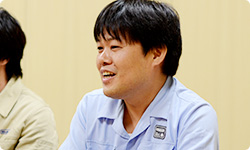 岩田 なるほど。開発中に水木さんから 「湯澤さんがいてくれてよかった・・・」 という話はけっこう何度も聞いていたんですけど、 今日、その意味が、すとんと落ちました。 栗栖 そこはかなり信頼していました。 逆に我々のことも信頼してくれていて、 最初に相談してからつくる、 というよりも、とりあえず先に つくってから進められたのはよかったです。 岩田 ご縁は不思議なものですね。 昔はライバルとして サービスをつくっていたのに・・・。 湯澤・栗栖 （顔を見合わせて）本当です（笑）。 栗栖 あと、開発環境に チャットルームをつくったんですけど、 そこで発言すると、すぐに誰かが反応してくれて、 まるで席がその辺にある人のような感覚で、 ほとんど距離感を感じることなく 仕事を進められました。 元山 それに、週に何度も会議をしていたから、 意見を正直に言えたこともあります。 だんだん会っているうちに 「仲間」みたいな感じになってきて、 まるで、任天堂のみなさんが、 はてなの社員みたいな感じでした（笑）。 栗栖 え？ そっちですか？ 僕らが任天堂さんの社員じゃなくて？ 元山 はい。わりと任天堂さんに 来ていただくことが多かったので。 はてなの中で、普通にオフィスの席の後ろで 作業しているときもありましたから（笑）。 岩田 身内になれたのは、 しょっちゅう会ったからだけですかね？ それだけじゃないような気がしますけど。 栗栖 あ、あと、「クラゲさん」って呼べたのも、 よかったんじゃないですかね？（笑） 元山 あー、そうですね。 ニックネームで呼び合えたことも よかったのかもしれないです。 栗栖 はてな社内は、 基本的にはてなＩＤで呼び合っていて、 元山さんのＩＤが「kudakurage」なんで、 いつも「クラゲさん」って呼んでいるんですけど、 そういうところでも親近感が・・・ 湧きました？（笑） 加藤 はい。どっちが本名か、 わからなくなりましたから。 元山 そんなわけないでしょう！ 一同 （笑） 湯澤 あと、煮詰まったときはすぐ、 「合宿しましょう」という感じにもなりました。 まあ、合宿といっても、 １日どこかに缶詰めになって 「集中的に」ってことなんですけど、 そういったことがすぐにできたので スムーズに進められたと思います。 栗栖 最初、“クリマ（クリエイターマンション）”って 愛称で呼ばれている、はてなが契約している マンションの一室で開発していたんですけど、 任天堂のみなさんに気に入っていただけて、 「ここに来ると楽しいです」 とおっしゃっていただけました。 湯澤 １ＬＤＫのマンションに、 大人が１０人ぐらい集まってね（笑）。 加藤 その後、オフィスに移動して 本格開発をスタートするのですが、 オフィスでは 土足厳禁じゃないんですけど、 みなさん、靴を脱がれるんです。 「僕らも脱いだほうがいいですか？」って聞いたら、 「いや、脱がなくていいです」と言われて・・・。 栗栖 あの、なぜ靴を脱ぐのか、というと、 初期の開発陣が、ずっとクリエイターマンションで 裸足で開発をしていたので、足が自由じゃないと、 うまく自分をモチベートできない感じに なってしまっているんです（笑）。 脱ぎたい人が脱いでいるだけだから、 土足で大丈夫なんです。 加藤 でも・・・どっちかっていうと、 僕らも脱ぎたいくらいなんですけど（笑）。 栗栖 あ、そうでしたか（笑）。 岩田 ああ、たしかにわたしもマンションで 作業をしていたハル研（※22）時代、 靴を脱がないとプログラムできない体に なっていたような気がします（笑）。 でも、ものをつくることに集中できて、 朝から晩までそれがやれるんだから、 楽しくてしかたがないんですよね。 今度、のぞきにいこうかな・・・。 栗栖 はい、ぜひ、お越しください！（笑） ※22 ハル研＝株式会社ハル研究所。『星のカービィ』や『スマブラ』シリーズなどを手掛けてきたソフトメーカー。かつて岩田が社長をつとめていた。
Wii Street U powered by Google 篇 1. “ゲーム機ならではのブラウザー” 2. 「Miiがいるだけで」 3. “共感” 4. “クラウド型ゲーム日記” 岩田 元山さん、ＰＣやタブレットとゲーム機とでは、 デザイン上で違いを感じたところはありますか？ 元山 シチュエーションが明らかに違うと思うんです。 ＰＣだったら、机で操作することになるし、 スマートフォンなら出先で使うことが あるかもしれないですけど、 『Miiverse』はゲームをしながら コミュニケーションをしますので、 いままでとはだいぶ違う印象がありました。 栗栖 たしかに最初、 「置いてゲームをするのか」 「片手で持つのか」 という話は、かなりしていましたね。 あと、わたしが水木さんからのご提案で 「ここにボタンをつけよう」と元山に言うと、 「それ、本当にいるんですか？」って だいたい言われました。 「いつ、誰が使うんですか？」って（笑）。 元山 はい、すみません（笑）。 いつも「どういう状態でこれを使うのか」って、 実際のシチュエーションを想像するようにしているんです。 「本当に使うのか？」をシミュレートしてみて、 「いや、いらない」と思ったときは、 正直にお伝えするようにしていました。 あと、僕なりに「なぜボタンなのか？」を できるだけ解釈して、ボタンの必要性を 考え直していました。 岩田 ある程度動き出してから、 新しい発見はありましたか？ 元山 デバッグで使ってもらえる段階になると、 考えていた以上のことがやりとりされて、 本当にいろんな反応があったので、 楽しさを実感できました。 岩田 ようやく、もうすぐ、本当に動きますね。 加藤 はい。デバッグのとき、 仮想的に『マリオ』のコミュニティをつくって 発言が並ぶのを見たんですけど、 ものすごくイメージがふくらんで、 「実際に遊ぶとこんな感じなのか・・・」 って思い描けました。 栗栖 「ステージがクリアできません！」という投稿があって、 「ルイージを踏んでいくんです」と回答があって、 「できましたー！」みたいなやりとりを見て、 「あー、これか！」と思いました。 湯澤 『Miiverse』は我々が想像している以上の使われかたを、 サービスが開始されてから お客さんにしていただけるんじゃないかと ものすごく楽しみなんです。 岩田 かつてのウェブサービスもみんな、 そうなっていったわけで、 たくさんの人が集まって 創造する知恵ってすごいですからね。 栗栖 そうですね。『うごメモ』も 最初は作品に対する「すごいですね」のような 評価コメントが多かったのに、 だんだん雑談チャットみたいなコメントが増えてきて、 そのうち『うごメモ』作品そのものが 「みんなでチャットしましょう」みたいな投稿が増えてきて、 こういう予想もしない変化が本当に面白いんですよね。 岩田 実際、「密度濃く、スピーディーに進んだ」 と思うんですが、うまくここまで進んだ理由って、 何だと思いますか？ 栗栖 じつは、湯澤さんは前職で、 「Yahoo!知恵袋」（※20）という Ｑ＆Ａサイトを担当されていて、 わたしもじつはこの仕事の前に、 「人力検索はてな」（※21）という Ｑ＆Ａサイトをやっていて、 同じ業界で同じ領域のサービスを担当していたんです。 ※20 「Yahoo!知恵袋」＝Yahoo! JAPANが運営する、みんなの知恵共有サービス。 ※21 「人力検索はてな」＝株式会社はてなが運営する、疑問を解決するＱ＆Ａサイト。 岩田 まさにライバルじゃないですか（笑）。 栗栖 はい（笑）。 最初の顔合わせのとき、 「なんと奇遇な！」みたいに盛り上がったんです。 だから基本的にウェブサービスという部分では、 共通認識がはじめからありました。 岩田 おたがい、一定の信頼が できるところからはじまったわけで、 いわば最初から“共感”のある状態から スタートできたんですね。 湯澤 ええ。だから、たとえば 水木さんから仕様の相談がきても、普通なら 「はてなさんに確認します」っていうところを、 「おそらくはてなさんならここまでは確実にできます」って、 わたしのほうで判断して、お返事していました。 岩田 はてなさんの代わりに、 返事をしていたんですか（笑）。 湯澤 はい。はてなさんにあとから確認すると、 そのあたりの感覚は一致していました。 長くウェブ開発に携わってきた者同士、 何が実現困難で何が簡単なのかの感覚は 一致していたと思います。 そこも今回、非常にスピーディーに 物事が進んだひとつの要因だと思います。 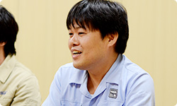 岩田 なるほど。開発中に水木さんから 「湯澤さんがいてくれてよかった・・・」 という話はけっこう何度も聞いていたんですけど、 今日、その意味が、すとんと落ちました。 栗栖 そこはかなり信頼していました。 逆に我々のことも信頼してくれていて、 最初に相談してからつくる、 というよりも、とりあえず先に つくってから進められたのはよかったです。 岩田 ご縁は不思議なものですね。 昔はライバルとして サービスをつくっていたのに・・・。 湯澤・栗栖 （顔を見合わせて）本当です（笑）。 栗栖 あと、開発環境に チャットルームをつくったんですけど、 そこで発言すると、すぐに誰かが反応してくれて、 まるで席がその辺にある人のような感覚で、 ほとんど距離感を感じることなく 仕事を進められました。 元山 それに、週に何度も会議をしていたから、 意見を正直に言えたこともあります。 だんだん会っているうちに 「仲間」みたいな感じになってきて、 まるで、任天堂のみなさんが、 はてなの社員みたいな感じでした（笑）。 栗栖 え？ そっちですか？ 僕らが任天堂さんの社員じゃなくて？ 元山 はい。わりと任天堂さんに 来ていただくことが多かったので。 はてなの中で、普通にオフィスの席の後ろで 作業しているときもありましたから（笑）。 岩田 身内になれたのは、 しょっちゅう会ったからだけですかね？ それだけじゃないような気がしますけど。 栗栖 あ、あと、「クラゲさん」って呼べたのも、 よかったんじゃないですかね？（笑） 元山 あー、そうですね。 ニックネームで呼び合えたことも よかったのかもしれないです。 栗栖 はてな社内は、 基本的にはてなＩＤで呼び合っていて、 元山さんのＩＤが「kudakurage」なんで、 いつも「クラゲさん」って呼んでいるんですけど、 そういうところでも親近感が・・・ 湧きました？（笑） 加藤 はい。どっちが本名か、 わからなくなりましたから。 元山 そんなわけないでしょう！ 一同 （笑） 湯澤 あと、煮詰まったときはすぐ、 「合宿しましょう」という感じにもなりました。 まあ、合宿といっても、 １日どこかに缶詰めになって 「集中的に」ってことなんですけど、 そういったことがすぐにできたので スムーズに進められたと思います。 栗栖 最初、“クリマ（クリエイターマンション）”って 愛称で呼ばれている、はてなが契約している マンションの一室で開発していたんですけど、 任天堂のみなさんに気に入っていただけて、 「ここに来ると楽しいです」 とおっしゃっていただけました。 湯澤 １ＬＤＫのマンションに、 大人が１０人ぐらい集まってね（笑）。 加藤 その後、オフィスに移動して 本格開発をスタートするのですが、 オフィスでは 土足厳禁じゃないんですけど、 みなさん、靴を脱がれるんです。 「僕らも脱いだほうがいいですか？」って聞いたら、 「いや、脱がなくていいです」と言われて・・・。 栗栖 あの、なぜ靴を脱ぐのか、というと、 初期の開発陣が、ずっとクリエイターマンションで 裸足で開発をしていたので、足が自由じゃないと、 うまく自分をモチベートできない感じに なってしまっているんです（笑）。 脱ぎたい人が脱いでいるだけだから、 土足で大丈夫なんです。 加藤 でも・・・どっちかっていうと、 僕らも脱ぎたいくらいなんですけど（笑）。 栗栖 あ、そうでしたか（笑）。 岩田 ああ、たしかにわたしもマンションで 作業をしていたハル研（※22）時代、 靴を脱がないとプログラムできない体に なっていたような気がします（笑）。 でも、ものをつくることに集中できて、 朝から晩までそれがやれるんだから、 楽しくてしかたがないんですよね。 今度、のぞきにいこうかな・・・。 栗栖 はい、ぜひ、お越しください！（笑） ※22 ハル研＝株式会社ハル研究所。『星のカービィ』や『スマブラ』シリーズなどを手掛けてきたソフトメーカー。かつて岩田が社長をつとめていた。
1. “ゲーム機ならではのブラウザー”
2. 「Miiがいるだけで」
3. “共感”
4. “クラウド型ゲーム日記”